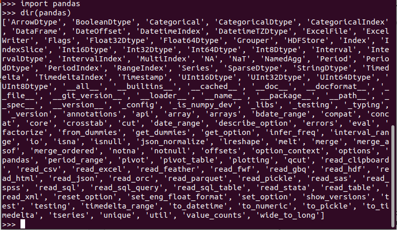
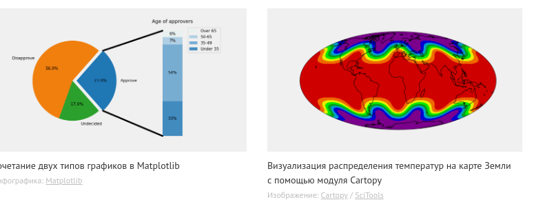

Обзор стандартной библиотеки
Ссылки: Обзор стандартной библиотекиСписок модулей стандартной библиотеки
Модули
Все библиотеки для python можно разделить на стандартные и дополнительные. Стандартные библиотеки входят в состав python и отдельной установки они не требуют. Их более 200 штук.
Дополнительные (сторонние) библиотеки устанавливаются отдельно, обычно так:
pip install name_library
На сайте Индекс пакетов Python (PyPI) - это хранилище программного обеспечения для языка программирования Python. находятся тысячи готовых пакетов. Скачивают и устанавливают их обычно с помощью питоновского менеджера программ pip. Обычно pip уже установлен. Чтобы проверить это и заодно узнать версию, служит команда:pip3 --version
У меня pip 20.0.2 from /usr/lib/python3/dist-packages/pip (python 3.8)Для того, чтобы установить какую-нибудь библиотеку из Python Package Index, например requests, необходимо запустить команду:
pip install requestsУстановится библиотека requests и все её зависимости.
Если операционная система linux скажет, что вам не хватает прав для данной операции, используйте команду:
sudo pip install requests
Обновление библиотеки до последней версии
pip install -upgrade library_nameУзнать установлена ли библиотека или номер установленной версии можно по команде:
pip show library_name
Посмотреть список всех установленных библиотек
pip freeze --local
Удаление библиотеки
pip uninstall library_nameУзнать справку по встроенной библиотеке можно из интерпретатора:
help('name_modul')
Узнать какие атрибуты имеет библиотека (модуль), нужно сначала импортировать модуль, а потом выполнить функцию dir:
import pandas dir(pandas)Выведутся все атрибуты, доступные для модуля:

Особенности использования библиотек в Python-проектах
Использование библиотек в Python-проектах может включать в себя ряд особенностей, связанных с взаимодействием с различными версиями Python и разрешением конфликтов и зависимостей между библиотеками.Виртуальные окружения: Для изоляции проекта от глобальных установок и обеспечения совместимости с различными версиями Python, часто используются виртуальные окружения. Библиотека `venv` или инструменты, такие как `virtualenv` и `conda`, позволяют создавать изолированные окружения для каждого проекта, где можно устанавливать необходимые версии библиотек.
Разрешение конфликтов и зависимостей между библиотеками
Файл зависимостей (requirements.txt): В Python-проектах часто используется файл `requirements.txt`, где перечислены все библиотеки и их версии, необходимые для работы проекта. Это позволяет легко воссоздавать окружение на других машинах.
Системы управления зависимостями: Использование инструментов управления зависимостями, таких как `pipenv` или `poetry`,
предоставляет более продвинутые средства для разрешения зависимостей и контроля версий библиотек. Они также поддерживают
виртуальные окружения.
Рассмотрим подробно на примере:
Давайте представим, что у вас есть Python-проект, который использует две библиотеки: `requests` для работы с HTTP-запросами и
`beautifulsoup4` для парсинга HTML-страниц. Кроме того, предположим, что проект требует Python версии 3.7.
1. Создание виртуального окружения:
В консоли:
python3.7 -m venv myenv source myenv/bin/activateЭти команды создают виртуальное окружение и активируют его. Вам нужно сделать это в корневой директории вашего проекта.
2. Установка библиотек (в консоли):
pip install requests==2.26.0 beautifulsoup4==4.10.0В файле `requirements.txt`:
requests==2.26.0 beautifulsoup4==4.10.0Это установит конкретные версии библиотек и сохраниит их в файле зависимостей.
3. Управление версиями Python:
Указать требуемую версию Python в файле `runtime.txt`:
python-3.7.*4. Обновление кода:
Регулярно обновляйте ваш код и зависимости, чтобы использовать новые возможности и улучшения. Это может включать в себя регулярное выполнение:
pip install –upgrade requests beautifulsoup4Обновите код вашего проекта в соответствии с новыми версиями библиотек.
5. Решение конфликтов:
Конфликты зависимостей в проекте могут возникнуть из-за несовместимости версий библиотек.
– Обновление кода. Попробуйте обновить версии библиотек в вашем проекте. Это может быть сделано с использованием менеджера пакетов, такого как pip для Python, npm для JavaScript, или аналогичного для других языков.
– Поиск альтернативных библиотек. Проверьте, существуют ли альтернативные библиотеки, которые не вызывают конфликтов
зависимостей. Иногда схожие функциональности предоставляют разные пакеты, и выбор другой библиотеки может быть вполне
разумным решением.
– Использование виртуального окружения. Виртуальные окружения позволяют изолировать зависимости для каждого проекта.
Используйте инструменты, такие как virtualenv (для Python) или venv, чтобы создать изолированное окружение для вашего проекта.
– Ручное разрешение. Если предыдущие шаги не привели к решению, может потребоваться ручное разрешение. Вам придется анализировать код обеих библиотек, понимать, какие изменения нужно внести, чтобы они совместимо работали.
– Сообщество и документация. Проверьте документацию библиотек и общество разработчиков. Возможно, есть рекомендации по
разрешению конфликтов зависимостей, или другие разработчики сталкивались с похожей проблемой.
– Обратная связь и сообщения об ошибках. Поставьте в известность разработчиков библиотек о возникших конфликтах. В сообществе
разработчиков часто ценится обратная связь, и они могут предоставить поддержку или исправления. Помните, что выбор подхода зависит от конкретных условий вашего проекта и доступных ресурсов.
Модули стандартной библиотеки можно условно разбить на группы по тематике.
Сервисы периода выполнения:
Модули: sys, atexit, copy, traceback, math, cmath, random, time, calendar, datetime, sets, array, struct, itertools, locale, gettext.Модуль sys
Ссылки: Разбираем модуль sysМодуль sys предоставляет системе особые параметры и функции.
- sys.argv
Значение sys.argv – это список аргументов командной строки, которые причастны к скрипту Python. Первый аргумент, argv[0], имеет аналогичное скрипту Python наименование. В зависимости от платформы, на которой вы работаете, первый аргумент может содержать полный путь к скрипту или к названию файла. Для дополнительных деталей обратитесь к документации. А тем временем, попробуем поработать с парочкой примеров, чтобы познакомиться с этим инструментом:
В интерпретаторе выполним:>>> import sys >>> print(sys.argv) ['']
Получили пустой список, потому что никакую программу не запускали.Если создадим скрипт 1.py с кодом:
import sys print(sys.argv)
и запустим его с командной строки:
- sys.executable
- sys.modules
- sys.path
- sys.platform
- sys.stdin/stdout/stderr
sys.exit
Данная функция позволяет разработчику выйти из Python. Функция exit принимает необязательный аргумент, обычно целое число, которое дает статус выхода. Ноль считается как успешное завершение. Обязательно проверьте, имеет ли ваша операционная система какие-либо особые значения для своих статусов выхода, чтобы вы могли следить за ними в своем собственном приложении. Обратите внимание на то, что когда вы вызываете exit, это вызовет исключение SystemExit, которое позволяет функциям очистки работать в конечных пунктах блоков try / except. Давайте взглянем на то, как вызывается данная функция:
import sys
sys.exit(0)
Traceback (most recent call last):
File "<pyshell#5>", line 1, in <module>
sys.exit(0)
SystemExit: 0
Запустив данный код в IDLE, вы увидите возникшую ошибку SystemExit. Давайте создадим несколько скриптов для теста. Для начала вам нужно создать основной скрипт, программу, которая будет вызывать другой скрипт Python. Давайте назовем его “call_exit.py”. Скрипт call_exit.py должен содержать следующее:
import subprocess code = subprocess.call(["python.exe", "exit.py"]) print(code) |
import sys sys.exit(0) |
Как вы могли заметить, написанный нами скрипт exit вернул ноль, так что он успешно заработал. Получается, мы заодно научились вызывать разные скрипты Python изнутри самого Python!
Модуль copy
Ссылки: Модуль copy - поверхностное и глубокое копирование объектовОперация присваивания не копирует объект, она лишь создаёт ссылку на объект. Для изменяемых коллекций, или для коллекций, содержащих изменяемые элементы, часто необходима такая копия, чтобы её можно было изменить, не изменяя оригинал. Данный модуль предоставляет общие (поверхностная и глубокая) операции копирования.
copy.copy(x) - возвращает поверхностную копию x.
copy.deepcopy(x) - возвращает полную копию x.
copy.error - возникает, если объект невозможно скопировать.
Разница между поверхностным и глубоким копированием существенна только для составных объектов, содержащих изменяемые объекты (например, список списков, или словарь, в качестве значений которого - списки или словари):
Поверхностная копия создает новый составной объект, и затем (по мере возможности) вставляет в него ссылки на объекты, находящиеся в оригинале.
Глубокая копия создает новый составной объект, и затем рекурсивно вставляет в него копии объектов, находящихся в оригинале.
>>> >>> import copy >>> test_1 = [1, 2, 3, [1, 2, 3]] >>> test_copy = copy.copy(test_1) # поверхностная копия >>> print(test_1, test_copy) [1, 2, 3, [1, 2, 3]] [1, 2, 3, [1, 2, 3]] >>> test_copy[3].append(4) >>> print(test_1, test_copy) [1, 2, 3, [1, 2, 3, 4]] [1, 2, 3, [1, 2, 3, 4]] # непонятно, вроде вставили отдельный 3 элемент, а не дополнили 2 >>> test_1 = [1, 2, 3, [1, 2, 3]] >>> test_deepcopy = copy.deepcopy(test_1) >>> test_deepcopy[3].append(4) >>> print(test_1, test_deepcopy) [1, 2, 3, [1, 2, 3]] [1, 2, 3, [1, 2, 3, 4]]Для операции глубокого копирования часто возникают две проблемы, которых нет у операции поверхностного копирования:
Рекурсивные объекты (составные объекты, которые явно или неявно содержат ссылки на себя) могут стать причиной рекурсивного цикла;
Поскольку глубокая копия копирует всё, она может скопировать слишком много, например, административные структуры данных, которые должны быть разделяемы даже между копиями.
Функция deepcopy решает эти проблемы путем:
Хранения "memo" словаря объектов, скопированных во время текущего прохода копирования;
Позволения классам, определенным пользователем, переопределять операцию копирования или набор копируемых компонентов.
>>> >>> r = [1, 2, 3] >>> r.append(r) >>> print(r) [1, 2, 3, [...]] >>> p = copy.deepcopy(r) >>> print(p) [1, 2, 3, [...]]Этот модуль не копирует типы вроде модулей, классов, функций, методов, следа в стеке, стековых кадров, файлов, сокетов, окон, и подобных типов.
Поверхностная копия изменяемых объектов также может быть создана методом .copy() у списков (начиная с Python 3.3), присваиванием среза (copied_list = original_list[:]), методом .copy() словарей и множеств. Создавать копию неизменяемых объектов (таких, как, например, строк) необязательно (они же неизменяемые).
Для того, чтобы определить собственную реализацию копирования, класс может определить специальные методы __copy__() и __deepcopy__(). Первый вызывается для реализации операции поверхностного копирования; дополнительных аргументов не передается.
Второй вызывается для реализации операции глубокого копирования; ему передается один аргумент, словарь memo. Если реализация __deepcopy__() нуждается в создании глубокой копии компонента, то он должен вызвать функцию deepcopy() с компонентом в качестве первого аргумента и словарем memo в качестве второго аргумента.
----------------------------------------------------------------------------------------------------------------------В модулях math cmath собраны математические функции для действительных и комплексных аргументов.
Модуль random генерирует псевдослучайные числа для нескольких различных распределений.
модуль time дает функции для получения текущего времени и преобразования форматов времени.
Модуль sets реализует тип данных для множеств.
Модули array и struct реализуют низкоуровневый массив и структуру данных. Основное их назначение - разбор двоичных форматов данных.
Модуль itertools
Ссылки: Модуль itertoolsМодуль itertools - это сборник полезных итераторов. Итераторы позволяют работать с данными последовательно, как если бы они получались в цикле. Альтернативный подход - использование списков для хранения промежуточных результатов - требует подчас большого количества памяти, тогда как использование итераторов позволяет получать значения на момент, когда они действительно требуются для дальнейших вычислений.
- itertools.count(start=0, step=1) - бесконечная арифметическая прогрессия с первым членом start и шагом step.
- itertools.cycle(iterable) - возвращает по одному значению из последовательности, повторенной бесконечное число раз.
- itertools.repeat(elem, n=Inf) - повторяет elem n раз.
- itertools.accumulate(iterable) - аккумулирует суммы.
accumulate([1,2,3,4,5]) --> 1 3 6 10 15
- itertools.chain(*iterables) - возвращает по одному элементу из первого итератора, потом из второго, до тех пор, пока итераторы не кончатся.
- itertools.combinations(iterable, [r]) - комбинации длиной r из iterable без повторяющихся элементов.
combinations('ABCD', 2) --> AB AC AD BC BD CD - itertools.combinations_with_replacement(iterable, r) - комбинации длиной r из iterable с повторяющимися элементами.
combinations_with_replacement('ABCD', 2) --> AA AB AC AD BB BC BD CC CD DD - itertools.compress(data, selectors) - (d[0] if s[0]), (d[1] if s[1]), ...
compress('ABCDEF', [1,0,1,0,1,1]) --> A C E F - itertools.dropwhile(func, iterable) - элементы iterable, начиная с первого, для которого func вернула ложь.
dropwhile(lambda x: x < 5, [1,4,6,4,1]) --> 6 4 1
- itertools.filterfalse(func, iterable) - все элементы, для которых func возвращает ложь.
- itertools.groupby(iterable, key=None)
Из официальной документации: создаёт итератор, который возвращает последовательные ключи и группы из iterable.
key - это функция, вычисляющая значение ключа для каждого элемента. Если значение не указано или равно None, по умолчанию используется функция идентификации key, которая возвращает элемент без изменений. Как правило, итерируемый объект уже должен быть отсортирован по той же ключевой функции.
Функция groupby() работает аналогично фильтру uniq в Unix. Она генерирует разрыв или новую группу каждый раз, когда изменяется значение функции key (именно поэтому обычно необходимо выполнить сортировку данных с использованием той же функции key). Это поведение отличается от поведения SQL GROUP, которое объединяет общие элементы независимо от порядка их ввода.
Возвращаемая группа сама по себе является итератором, который совместно использует базовую итерацию с groupby(). Поскольку исходный код является общим, при расширении объекта groupby() предыдущая группа больше не отображается. Поэтому, если эти данные понадобятся позже, их следует сохранить в виде списка:groups = [] uniquekeys = [] data = sorted(data, key=keyfunc) for k, g in groupby(data, keyfunc): groups.append(list(g)) # Store group iterator as a list uniquekeys.append(k)groupby() эквивалентно:oupby(iterable, key=None): # [k for k, g in groupby('AAAABBBCCDAABBB')] → A B C D A B # [list(g) for k, g in groupby('AAAABBBCCD')] → AAAA BBB CC D keyfunc = (lambda x: x) if key is None else key iterator = iter(iterable) exhausted = False def _grouper(target_key): nonlocal curr_value, curr_key, exhausted yield curr_value for curr_value in iterator: curr_key = keyfunc(curr_value) if curr_key != target_key: return yield curr_value exhausted = True try: curr_value = next(iterator) except StopIteration: return curr_key = keyfunc(curr_value) while not exhausted: target_key = curr_key curr_group = _grouper(target_key) yield curr_key, curr_group if curr_key == target_key: for _ in curr_group: passДругое объяснение из https://pythonworld.ru/moduli/modul-itertools.html:
- группирует элементы по значению. Значение получается применением функции key к элементу (если аргумент key не указан, то значением является сам элемент).>>> from itertools import groupby >>> things = [("animal", "bear"), ("animal", "duck"), ("plant", "cactus"), ... ("vehicle", "speed boat"), ("vehicle", "school bus")] >>> for key, group in groupby(things, lambda x: x[0]): ... for thing in group: ... print("A %s is a %s." % (thing[1], key)) ... print() A bear is a animal. A duck is a animal. A cactus is a plant. A speed boat is a vehicle. A school bus is a vehicle. - tertools.islice(iterable[, start], stop[, step]) - итератор, состоящий из среза.
- itertools.permutations(iterable, r=None) - перестановки длиной r из iterable.
- itertools.product(*iterables, repeat=1) - аналог вложенных циклов.
product('ABCD', 'xy') --> Ax Ay Bx By Cx Cy Dx Dy - itertools.starmap(function, iterable) - применяет функцию к каждому элементу последовательности (каждый элемент распаковывается).
starmap(pow, [(2,5), (3,2), (10,3)]) --> 32 9 1000
- itertools.takewhile(func, iterable) - элементы до тех пор, пока func возвращает истину.
takewhile(lambda x: x<5, [1,4,6,4,1]) --> 1 4
- itertools.tee(iterable, n=2) - кортеж из n итераторов.
- itertools.zip_longest(*iterables, fillvalue=None) - как встроенная функция zip, но берет самый длинный итератор, а более короткие дополняет fillvalue.
zip_longest('ABCD', 'xy', fillvalue='-') --> Ax By C- D-
Модуль locale применяется для работы с культурной средой. В конкретной культурной среде могут использоваться свои правила для написания чисел, валют, времени и даты и т.п.
Модуль gettext При интернационализации программы важно не только предусмотреть возможность использования нескольких культурных сред, но и перевод сообщений и меню программы на соответствующий язык.
====================================================================================================================
Модуль subprocess
Ссылки: Модуль subprocess — Работаем с процессамМодуль subprocess дает разработчику возможность запускать процессы программ из Python. Другим словами, вы можете запускать приложения и передавать им аргументы при помощи модуля subprocess. Модуль subprocess был внедрен в Python 2.4 для замены настроек вызовов модуля os, таких как os.popen, os.spawn и os.system, а также для замены popen2 и старых командных модулей.
- Функция вызова call
Модуль subprocess содержит функцию под названием call. Эта функция позволяет вам вызывать другую программу, дожидаться завершения команды и вернуть код возврата. Она принимает один или несколько аргументов, а также следует ключевым аргументам (с их значениями): stdin=None, stdout=None, stderr=None, shell=False.
Взглянем на простой пример:import subprocess # Для Windows subprocess.call("notepad.exe") # Для linux subprocess.call("gedit")Если вы запустите этот код на машине, которая работает на Windows Python, вы увидите открывшийся блокнот. Обратите внимание на то, что IDLE (наверное это имя интерпретатора) ожидает, пока вы закроете блокнот, после чего вернет нулевой код (0).
Это значит, что код был выполнен успешно. Если вы получите что-либо, что не является ноль, то вы столкнулись с какой-то ошибкой.Метод call также принимает аргументы, для передачи программе, которую вы выполняете. Давайте взглянем на то, как это работает:
import subprocess code = subprocess.call(["ping", "www.yahoo.com"])
В ответе получим результат пингования сайта.
Обратите внимание на то, что в данном примере мы передали список аргументов. Первый объект в списке это программа, которую мы хотим вызвать. Все остальное в списке – это аргументы, которые мы хотим передать программе. Так что в данном примере мы выполняем пинг на сайте Yahoo. Также обратите внимание на то, что код возврата нулевой, так что все прошло успешно. - Функция run()
Функция subprocess.run() может выполнять команды терминала (башевские) и затем выводить результат выполнения команды в виде строки.
Пример:#!/usr/bin/env python3 import subprocess, locale procObj = subprocess.run(['ls', '-al'], stdout=subprocess.PIPE) outputStr = procObj.stdout.decode(locale.getdefaultlocale()[1]) print(outputStr)
Вывод в терминале:
итого 8072 drwxrwxr-x 4 dmitriy dmitriy 4096 янв 20 15:29 . drwxr-xr-x 49 dmitriy dmitriy 4096 янв 20 14:59 .. -rwxrw-r-- 1 dmitriy dmitriy 195 янв 20 15:29 1.py drwxrwxr-x 2 dmitriy dmitriy 4096 окт 7 12:03 .ipynb_checkpoints drwxrwxr-x 5 dmitriy dmitriy 4096 янв 20 14:34 mypython -rw-rw-r-- 1 dmitriy dmitriy 8243089 янв 20 15:25 Свейгарт Эл - Python. Чистый код для продолжающих
Функции subprocess.run() передается список ['ls', '-al']. Он содержит имя команды ls , за которым следуют аргументы в виде отдельных строк. Обратите внимание: с передачей ['ls -al'] функция работать не будет. Вывод команды хранится в виде строки в outputStr. Электронная документация функций subprocess run() и locale.getdefaultlocale() даст вам лучшее представление о том, как они действуют, причем с ними ваш код будет работать в любой операционной системе, где функционирует Python.
====================================================================================================================
Модули этого раздела помогают поддерживать документацию, производить регрессионное тестирование, отлаживать и профилировать программы на Python, а также обслуживают распространение готовых программ, создавая среду для конфигурирования и установки пакетов.
Будьте внимательны: некоторые функции из этого модуля поддерживаются не всеми ОС.
os.name - имя операционной системы. Доступные варианты: 'posix', 'nt', 'mac', 'os2', 'ce', 'java'.
os.environ - словарь переменных окружения. Изменяемый (можно добавлять и удалять переменные окружения).
os.getlogin() - имя пользователя, вошедшего в терминал (Unix).
os.getpid() - текущий id процесса.
os.uname() - информация об ОС. возвращает объект с атрибутами: sysname - имя операционной системы, nodename - имя
машины в сети (определяется реализацией), release - релиз, version - версия, machine - идентификатор машины.
os.access(path, mode, *, dir_fd=None, effective_ids=False, follow_symlinks=True) - проверка доступа к объекту у
текущего пользователя. Флаги: os.F_OK - объект существует, os.R_OK - доступен на чтение, os.W_OK - доступен на запись, os.X_OK
- доступен на исполнение.
os.chdir(path)
os.chmod(path, mode, *, dir_fd=None, follow_symlinks=True) - смена прав доступа к объекту (mode - восьмеричное число).
os.chown(path, uid, gid, *, dir_fd=None, follow_symlinks=True) - меняет id владельца и группы (Unix).
os.getcwd() - текущая рабочая директория.
os.link(src, dst, *, src_dir_fd=None, dst_dir_fd=None, follow_symlinks=True) - создаёт жёсткую ссылку.
os.listdir(path=".") - список файлов и директорий в папке.
os.mkdir(path, mode=0o777, *, dir_fd=None) - создаёт директорию. OSError, если директория существует.
os.makedirs(path, mode=0o777, exist_ok=False) - создаёт директорию, создавая при этом промежуточные директории.
os.remove(path, *, dir_fd=None) - удаляет путь к файлу.
os.rename(src, dst, *, src_dir_fd=None, dst_dir_fd=None) - переименовывает файл или директорию из src в dst.
os.renames(old, new) - переименовывает old в new, создавая промежуточные директории.
os.replace(src, dst, *, src_dir_fd=None, dst_dir_fd=None) - переименовывает из src в dst с принудительной заменой.
os.rmdir(path, *, dir_fd=None) - удаляет пустую директорию.
os.removedirs(path) - удаляет директорию, затем пытается удалить родительские директории, и удаляет их рекурсивно, пока
они пусты.
os.symlink(source, link_name, target_is_directory=False, *, dir_fd=None) - создаёт символическую ссылку на объект.
os.sync() - записывает все данные на диск (Unix).
os.truncate(path, length) - обрезает файл до длины length.
os.utime(path, times=None, *, ns=None, dir_fd=None, follow_symlinks=True) - модификация времени последнего доступа и
изменения файла. Либо times - кортеж (время доступа в секундах, время изменения в секундах), либо ns - кортеж (время доступа в
наносекундах, время изменения в наносекундах).
os.walk(top, topdown=True, onerror=None, followlinks=False) - генерация имён файлов в дереве каталогов, сверху вниз
(если topdown равен True), либо снизу вверх (если False). Для каждого каталога функция walk возвращает кортеж (путь к
каталогу, список каталогов, список файлов).
os.system(command) - исполняет системную команду, возвращает код её завершения (в случае успеха 0).
os.urandom(n) - n случайных байт. Возможно использование этой функции в криптографических целях.
Почему вам следует использовать pathlib
Функция glob.glob() используется для поиска всех файлов, соответствующих определенному шаблону. В качестве аргумента она
принимает строку с шаблоном.
Если вы хотите искать файлы не только в текущей директории, но и во всех вложенных папках, используйте аргумент recursive=True.
В модуле glob поддерживаются следующие символы-шаблоны:
Важно: символы-шаблоны работают только для имен файлов и папок, а не для их содержимого.
На 14.02.2025 самой современной и популярной библиотекой для работы с xml-файлами является библиотека xml.etree.ElementTree
XML по своей сути является иерархическим форматом данных, и наиболее естественным способом его представления является дерево. Для этой цели в ET есть два класса - ElementTree представляет весь XML-документ в виде дерева, а Element представляет отдельный узел в этом дереве. Взаимодействие со всем документом (чтение и запись в файлы и из них) обычно выполняется на уровне ElementTree. Взаимодействие с отдельным XML-элементом и его подэлементами выполняется на уровне Element.
Парсинг XML
Мы можем импортировать эти данные, считав их из файла:
Или непосредственно из строки:
Как Element, root имеет тег и словарь атрибутов:
После создания объектом Element можно манипулировать, непосредственно изменяя его поля (например, Element.text), добавляя и модифицируя атрибуты (метод Element.set()), а также добавляя новые дочерние элементы (например, с помощью Element.append()).
Допустим, мы хотим добавить по одному атрибуту к рейтингу каждой страны и добавить обновленный атрибут к элементу rank:
Синтаксический анализ XML с использованием пространств имен
XML - это язык разметки текста в текстовых файлах с помощью тегов. Для работы с такими файлами служит пакет XML.
Чтение строки xml-формата
Посмотреть определенный тег по индексу:
Увидеть только теги с атрибутами:
Операции с содержимым тегов:
Удаление атрибута
Удалили из root[0] (первый тег от корня) атрибут.
Удаление одного подэлемента
Удалим тег description у второго тега student, это root[1][4]:
root[0].clear() - удалит все теги внутри root[0]
Удаление текстового содержимого:
Сделал изменения в example.xml, обновил страницу в браузере '/home/dmitriy/Python/mypython/example.xml', ничего не изменилось.
Тогда
Создать копию файла example.xml:
Для установки библиотеки lxml, выполните следующую команду:
Пример:
Метод Counter:
defaultdict:
------------------------------------------------------------------------------------------------------------------
CSV (comma-separated value) - это формат представления табличных данных (например, это могут быть данные из таблицы или данные
из БД).
Чтение:
Обратите внимание, что сам csv.reader возвращает итератор.
Чаще всего заголовки столбцов удобней получить отдельным объектом. Это можно сделать таким образом (файл csv_read_headers.py):
Для этого в модуле есть DictReader (файл csv_read_dict.py):
Запись:
Вывод будет таким:
Так получилось из-за того, что во всех строках последнего столбца есть запятая. И кавычки указывают на то, что именно является
целой строкой. Когда запятая находится в кавычках, модуль csv не воспринимает её как разделитель.
Иногда лучше, чтобы все строки были в кавычках. Конечно, в данном случае достаточно простой пример, но когда в строках больше
значений, то кавычки позволяют указать, где начинается и заканчивается значение.
Модуль csv позволяет управлять этим. Для того, чтобы все строки записывались в CSV-файл с кавычками, надо изменить скрипт
таким образом (файл csv_write_quoting.py):
Кроме метода writerow, поддерживается метод writerows. Ему можно передать любой итерируемый объект.
Например, предыдущий пример можно записать таким образом (файл csv_writerows.py):
DictWriter
В целом DictWriter работает так же, как writer, но так как словари не упорядочены, надо указывать явно в каком порядке будут
идти столбцы в файле. Для этого используется параметр fieldnames (файл csv_write_dict.py):
Указание разделителя:
Например, если в файле используется разделитель ; (файл sw_data2.csv):
JSON (JavaScript Object Notation) - это текстовый формат для хранения локально и обмена данными с удалённым сервером.
Чтение:
json.load - метод считывает файл в формате JSON и возвращает объекты Python
json.loads - метод считывает строку в формате JSON и возвращает объекты Python
json.load
Запись:
Модуль json предоставляет метод dump() для записи данных в файлы. Также есть метод dumps() для записей в строку Python.
json.dumps
json.dump
Дополнительные параметры методов записи
По умолчанию эти методы записывают информацию в компактном представлении. Как правило, когда данные используются другими
программами, визуальное представление данных не важно. Если же данные в файле нужно будет считать человеку, такой формат не
очень удобно воспринимать.
К счастью, модуль json позволяет управлять подобными вещами.
Передав дополнительные параметры методу dump (или методу dumps), можно получить более удобный для чтения вывод (файл
json_write_indent.py):
Изменение типа данных
Например, кортежи при записи в JSON превращаются в списки:
Таблица конвертации данных Python в JSON:
Таблица конвертации JSON в данные Python:
Ограничение по типам данных
С помощью дополнительного параметра можно игнорировать подобные ключи:
Для отправки электронных писем с Python нам понадобятся несколько библиотек. Основная библиотека, которую мы будем использовать, это smtplib, которая входит в стандартную библиотеку Python. Для работы с вложениями и форматированием писем мы также будем использовать библиотеку email.
Если вы планируете автоматизировать процесс рассылки писем, используя базу данных, вам также потребуется библиотека для работы с вашей базой данных. В нашем примере мы будем использовать SQLite, которая является легковесной и удобной для небольших приложений. Однако вы можете использовать любую другую базу данных, заменив библиотеку sqlite3 на соответствующую библиотеку для вашей базы данных.
Функция send_simple_email создает объект MIMEMultipart, который представляет собой электронное письмо. Мы добавляем тело письма с помощью метода attach и устанавливаем соединение с SMTP-сервером. После успешного входа в систему мы отправляем письмо и закрываем соединение. Пример использования функции показывает, как можно отправить тестовое письмо с помощью этой функции.
Мы открываем файл для чтения в бинарном режиме и создаем объект MIMEBase, который представляет собой вложение. Затем мы кодируем файл в base64 и добавляем заголовок, указывающий имя файла. Вложение добавляется к объекту MIMEMultipart, и письмо отправляется аналогично простому письму. Пример использования функции показывает, как можно отправить письмо с вложением с помощью этой функции.
Функция send_bulk_emails использует данные, извлеченные из базы данных, для отправки писем. Мы проходим по каждому записанному в базе данных письму и вызываем функцию send_simple_email для отправки письма. Этот подход позволяет автоматизировать процесс рассылки и отправлять большое количество писем с минимальными усилиями. Пример использования функции показывает, как можно использовать эти функции для отправки массовых писем.
Теперь вы знаете, как отправлять электронные письма с помощью Python, включая отправку писем с вложениями и автоматизацию рассылки через базу данных. Эти навыки помогут вам создавать более сложные и полезные приложения. Вы можете адаптировать эти примеры для работы с любой другой базой данных или SMTP-сервером, что делает этот подход универсальным и гибким.
Почти все современные приложения имеют графический интерфейс пользователя. Такие приложения можно создавать и на языке Python.
В стандартной поставке имеется модуль Tkinter, который есть не что иное, как интерфейс к языку Tcl/Tk, на котором можно
описывать графический интерфейс.
Следует отметить, что существуют и другие пакеты для программирования графического интерфейса: wxPython (основан на
wxWidgets), PyGTK и т.д. Среди этих пакетов в основном такие, которые работают на одной платформе (реже - на двух).
Functools – это библиотека Python, которая предназначена для работы с функциями высшего порядка. Такие функции могут принимать
в себя другие функции и возвращать функции. Они помогают разработчиком писать код, который можно переиспользовать. Функции
можно использовать или расширять, не переписывая их полностью. Модуль functools в Python предоставляет различные инструменты,
которые позволяют добиться описанного эффекта. Модуль functools определяет следующие функции:
Partial
Мы можем создавать новые функции, передавая частичные аргументы. Также мы можем заморозить некоторые аргументы функции, что
приведет к появлению нового объекта. Еще один способ представить partial, заключается в том, что с ее помощью мы можем создать
функцию со значениями по умолчанию. Partial поддерживает ключевые слова и позиционные аргументы в качестве фиксированных.
Чтобы создать partial-функцию, используйте partial() из библиотеки functools. Пишется она следующим образом:
Допустим, функция ниже складывает два числа:
Функция сравнения - функция, принимающая два аргумента, сравнивающая их и возвращающая отрицательное число, если первый аргумент меньше, ноль, если равен и положительное число, если больше. Key-функция - функция, принимающая один аргумент и возвращающая другое значение, определяющее положение аргумента при сортировке.
Если maxsize установлен в None, кэш может возрастать бесконечно. Также функция наиболее эффективна, если maxsize это степень двойки.
Если typed - True, аргументы функции с разными типами будут кэшироваться отдельно. Например, f(3) и f(3.0) будут считаться разными вызовами, возвращающие, возможно, различный результат.
Чтобы помочь измерить эффективность кэширования и отрегулировать размер кэша, обёрнутая функция дополняется функцией cache_info(), возвращающая namedtuple, показывающий попадания в кэш, промахи, максимальный размер и текущий размер. В многопоточном окружении, количество попаданий и промахов приблизительно.
Также имеется функция cache_clear() для очистки кэша.
Оригинальная функция доступна через атрибут __wrapped__.
Пример простого запроса в программе:
Этот модуль позволяет управлять датами и временем, представляя их в таком виде, в котором пользователи смогут их понимать.
datetime включает различные компоненты. Так, он состоит из объектов (классов) следующих типов:
Как получить текущие дату и время?
С помощью модуля Python это сделать очень просто. Сначала нужно импортировать класс datetime из модуля datetime, после чего
создать объект datetime. Модуль предоставляет метод now(), который возвращает текущие дату и время с учетом локальных настроек.
Пример:
Класс date можно использовать для получения или изменения объектов даты. Например, для получения текущей с учетом настроек
подойдет следующее:
Получить текущее время
Компоненты datetime в Python
Как создавать объекты даты и времени
В этом примере создается объект времени представленный следующим образом (8, 48, 45).
Для создания объекта даты нужно передать дату с использованием следующего синтаксиса:
datetime.datetime(year,month,day))
Такой пример:
Timedelta
Как вычислить разницу для двух дат
Как вычислить разницу двух объектов datetime.time
Как получать прошлые и будущие даты с помощью timedelta
Matplotlib является самой популярной библиотекой для построения графиков и визуализации данных для Питон.

Сама Matplotlib является основой для других библиотек — например, Seaborn позволяет проще создавать графики и имеет больше возможностей для косметического улучшения их внешнего вида. Но Matplotlib — это базовая библиотека для визуализации данных, незаменимая в анализе данных.
Как связаны Matplotlib, Pyplot и Pylab
Библиотека Matplotlib — это пакет для визуализации данных в Python. Pyplot — это модуль в пакете Matplotlib. Его вы часто будете видеть в коде как matplotlib.pyplot. Модуль помогает автоматически создавать оси, фигуры и другие компоненты, не задумываясь о том, как это происходит. Именно Pyplot используется в большинстве случаев.
Pylab — это ещё один модуль, который устанавливается вместе с пакетом Matplotlib. Он одновременно импортирует Pyplot и библиотеку NumPy для работы с массивами в интерактивном режиме или для доступа к функциям черчения при работе с данными.
plt.show() — функция, которая отвечает за вывод визуализированных данных на экран. Её можно и не указывать, но тогда, помимо красивой картинки, мы увидим разную техническую информацию.
Дополним наш первый график заголовком и подписями осей:
В Python существует несколько библиотек, облегчающих взаимодействие с различными системами управления базами данных (СУБД). Некоторые из наиболее распространенных библиотек в этой области включают SQLite, MySQL и PostgreSQL.
SQLite
MySQL и PostgreSQL
Интеграция в приложения Python
Для начала работы с OpenCV в Python необходимо установить библиотеку. Это можно сделать с помощью команды:
Задача: Обнаружение лиц на фотографии.
В этом примере OpenCV используется для обнаружения лиц на фотографии. Мы загружаем изображение, преобразуем его в оттенки
серого, а затем используем каскадный классификатор лиц для поиска лиц. Обнаруженные лица выделяются прямоугольниками, и результат отображается. Эта задача является частью обширного спектра приложений компьютерного зрения, таких как системы
видеонаблюдения, автоматическая фокусировка камер, распознавание эмоций и многие другие. Такие проекты часто включают в себя разработку решений в области робототехники, машинного обучения и даже виртуальной или дополненной реальности.
Задача: Использование OpenCV для обработки изображений.
В этом примере используется библиотека OpenCV для загрузки изображения, преобразования его в оттенки серого, применения фильтра Гаусса для сглаживания и выделения границ с использованием оператора Canny. OpenCV предоставляет обширные возможности для обработки изображений, включая фильтрацию, сегментацию, детекцию объектов и многое другое. Он часто применяется в компьютерном зрении, робототехнике и других областях, где требуется работа с изображениями.
Задача: Отслеживание движения с использованием OpenCV
Этот код использует OpenCV для отслеживания движения на видео. Он вычисляет разницу между текущим кадром и начальным кадром,
преобразует эту разницу в бинарное изображение, находит контуры объектов и отображает прямоугольники вокруг объектов, которые
двигаются.
Джейд Картер Python библиотеки часть 2 стр.180
В данном примере решается сразу несколько задач. Сначала изображение загружается в формате BGR (стандартный формат OpenCV). После этого оно преобразуется в различные формы: уменьшается до заданных размеров, переводится в оттенки серого, подвергается размытию и обработке с целью выявления границ. Границы определяются с помощью метода Canny, который выделяет контуры объектов на изображении. Результирующее изображение сохраняется на диск. Основные моменты работы с OpenCV включают управление окнами
для отображения результатов (`cv2.imshow`), применение различных фильтров (`cv2.GaussianBlur`) и преобразований (например,
`cv2.cvtColor` для перевода изображения в другой цветовой формат). Пример легко адаптируется для выполнения других задач, таких как преобразование яркости, наложение текстов и форм, а также применение сложных операций, например, обнаружение лиц или
объектов. OpenCV обеспечивает простоту выполнения этих операций, предоставляя мощный инструмент для визуальных и мультимедийных
задач.
Библиотеки Flask, Django и Pyramid предоставляют инструменты для создания веб-приложений на языке программирования Python.
Потом в папке, где находится скрипт first_app.py, создаём папку templates и в этой папке начальную страницу index.html с формой:
В теге form есть атрибут method, имеющий значение GET или POST . Это методы, которые используются в веб-серверах. Если нужно получить что-то с сервера, например веб-страницу, используют метод GET . Если нужно отправить информацию на сервер, используют
метод POST
Основные концепции Pytest:
Установка Pytest:
test_my_module.py:
Запуск тестов
Использование фикстур
Параметризация тестов
Запуск всех тестов
Тестирование исключений
Модуль os
Модуль os предоставляет множество функций для работы с операционной системой, причём их поведение, как правило, не зависит от
ОС, поэтому программы остаются переносимыми. Здесь будут приведены наиболее часто используемые из них.
Смена текущей директории.
path - путь к каталогу в виде строки.
Возвращает None. Чтобы узнать, что изменилась рабочая папка, лучше применить функцию os.getcwd(): print(os.getcwd())
Примеры использования:
>>> import os
>>> os.getcwd()
# '/home/docs-python'
>>> os.chdir(os.pardir)
>>> os.getcwd()
# '/home'
os.path
Модуль, реализующий некоторые полезные функции на работы с путями.
os.path является вложенным модулем в пакет os, и реализует некоторые полезные функции для работы с путями.
Модуль glob
Модуль glob в Python предоставляет удобный способ искать файлы с определенными шаблонами.
Пример использования:
import glob
files = glob.glob('*.txt')
print(files)
В данном случае мы ищем все файлы с расширением .txt в текущей директории. Результат будет представлен в виде списка.
Пример использования:
import glob
files = glob.glob('**/*.txt', recursive=True)
print(files)
Теперь функция glob.glob() будет искать файлы с расширением .txt в текущей директории и всех поддиректориях.
* — соответствует любому количеству символов (включая пустую строку)
? — соответствует одному любому символу
[...] — соответствует одному из символов, заключенных в квадратные скобки (например, [abc] соответствует символам a, b или c)
Пример использования:
import glob
files = glob.glob('*[0-9].txt')
print(files)
В данном случае мы ищем все файлы, имя которых заканчивается на цифру и расширением .txt.
Модули: string, re, StringIO, codecs, difflib, mmap, sgmllib, htmllib, htmlentitydefs.
Пакет xml.
-----------------------------------------------------------------------------------------------------------
Пакет xml
Ссылки: Как использовать Python для работы с XML
Перевод
документации
xml.etree.ElementTree
Ссылки: Документация
Будем использовать country_data.xml для примеров:
<?xml version="1.0"?>
<data>
<country name="Liechtenstein">
<rank>1</rank>
<year>2008</year>
<gdppc>141100</gdppc>
<neighbor name="Austria" direction="E"/>
<neighbor name="Switzerland" direction="W"/>
</country>
<country name="Singapore">
<rank>4</rank>
<year>2011</year>
<gdppc>59900</gdppc>
<neighbor name="Malaysia" direction="N"/>
</country>
<country name="Panama">
<rank>68</rank>
<year>2011</year>
<gdppc>13600</gdppc>
<neighbor name="Costa Rica" direction="W"/>
<neighbor name="Colombia" direction="E"/>
</country>
</data>
import xml.etree.ElementTree as ET
tree = ET.parse('country_data.xml')
root = tree.getroot()
root = ET.fromstring(country_data_as_string)
Функция fromstring() преобразует XML из строки непосредственно в Element, который является корневым элементом анализируемого дерева. Другие функции синтаксического анализа могут создавать ElementTree.
>>> root.tag
'data'
>>> root.attrib
{}
root также имеет дочерние узлы, по которым мы можем выполнять итерации:
for child in root:
print(child.tag, child.attrib)
Вывод:
country {'name': 'Liechtenstein'}
country {'name': 'Singapore'}
country {'name': 'Panama'}
Дочерние узлы являются вложенными, и мы можем получить доступ к определенным дочерним узлам по индексу:
print(root[0][0].text)
print(root[0][1].text)
print(root[0][2].text)
print(root[0][3].text)
print(root[0][4].text)
print(root[1][3].text)
Вывод:
1
2008
141100
None
None
None
Чтобы прочитать XML-документ с URL-адреса с помощью xml.etree.ElementTree
нужно:
Если XML-документ использует кодировку, отличную от UTF-8, при разборе данных нужно указать кодировку.
import urllib.request
import xml.etree.ElementTree as ET
url = 'http://example.com/data.xml'
with urllib.request.urlopen(url) as response:
xml_data = response.read()
root = ET.fromstring(xml_data)
Поиск интересных элементов
В Element есть несколько полезных методов, которые помогают выполнять рекурсивную итерацию по всему поддереву под ним (его дочерним элементам, их дочерним элементам и т.д.). Например, Element.iter():
for neighbor in root.iter('neighbor'):
print(neighbor.attrib)
Вывод:
{'name': 'Austria', 'direction': 'E'}
{'name': 'Switzerland', 'direction': 'W'}
{'name': 'Malaysia', 'direction': 'N'}
{'name': 'Costa Rica', 'direction': 'W'}
{'name': 'Colombia', 'direction': 'E'}
Element.findall() находит только элементы с тегом, которые являются прямыми дочерними элементами текущего элемента.
Element.find() находит первый дочерний элемент с определенным тегом, а Element.text получает доступ к текстовому содержимому элемента.
Element.get() получает доступ к атрибутам элемента:
for country in root.findall('country'):
rank = country.find('rank').text
name = country.get('name')
print(name, rank)
Вывод:
Liechtenstein 1
Singapore 4
Panama 68
Более сложное определение того, какие элементы следует искать, возможно с помощью XPath.
Изменение XML-файла
ElementTree предоставляет простой способ создания XML-документов и записи их в файлы.
Метод ElementTree.write() служит для этой цели.
for rank in root.iter('rank'):
new_rank = int(rank.text) + 1
rank.text = str(new_rank)
rank.set('updated', 'yes')
tree.write('output.xml')
Создастся новый файл output.xml в каталоге из которого выполняется скрипт.
<data>
<country name="Liechtenstein">
<rank updated="yes">2</rank>
<year>2008</year>
<gdppc>141100</gdppc>
<neighbor name="Austria" direction="E"/>
<neighbor name="Switzerland" direction="W"/>
</country>
<country name="Singapore">
<rank updated="yes">5</rank>
<year>2011</year>
<gdppc>59900</gdppc>
<neighbor name="Malaysia" direction="N"/>
</country>
<country name="Panama">
<rank updated="yes">69</rank>
<year>2011</year>
<gdppc>13600</gdppc>
<neighbor name="Costa Rica" direction="W"/>
<neighbor name="Colombia" direction="E"/>
</country>
</data>
Мы можем удалить элементы, используя Element.remove(). Допустим, мы хотим удалить все страны с рейтингом выше 50:
for country in root.findall('country'):
# используем root.findall(), чтобы избежать удаления во время обхода
rank = int(country.find('rank').text)
if rank > 50:
root.remove(country)
tree.write('output.xml')
Обратите внимание, что одновременное изменение во время итерации может привести к проблемам, точно так же, как при итерации и изменении списков Python или dicts. Поэтому в примере сначала собираются все совпадающие элементы с помощью root.findall(), и только затем выполняется итерация по списку совпадений.
Создание XML-документов
Функция SubElement() предоставляет удобный способ создания новых подэлементов для данного элемента:
a = ET.Element('a')
b = ET.SubElement(a, 'b')
c = ET.SubElement(a, 'c')
d = ET.SubElement(c, 'd')
ET.dump(a)
xml_string = '''
<data>
<country name="Russia">
<city>Moscow</city>
</country>
<country name="USA">
<city>New York</city>
</country>
</data>
'''
# Загрузка XML-строки в объект ElementTree
root = ET.fromstring(xml_string)
# Итерация по элементам
for country in root.findall('country'):
name = country.get('name')
city = country.find('city').text
print(f'{name}: {city}')
Функция fromstring(): создать элемент из строки
Вы можете создать элемент или дерево элементов из строки, содержащей XML, с помощью этой функции; она возвращает новый
экземпляр Element, представляющий весь этот XML.
etree.fromstring(s)
где s - строка.
Нумерация тегов начинается с нуля.
print(root[0])
Здесь root[0] - это первый тег внутри корневого. Им является тег 'student'. Чтобы посмотреть содержимое этого тега,
используется метод text.
>>> print(root[0][1])
<Element 'lastName' at 0x7f4acf4e31d0>
>>> print(root[0][1].text)
Pascal
Сначало смотрим второй тег внутри первого от корневого, а потом смотрим его содержимое.
Обход элементов XML
Мы можем обойти все элементы XML-дерева, используя метод iter():
Это выведет название и атрибуты каждого элемента в дереве.
for elem in root.iter():
print(elem.tag, elem.attrib)
Вывод:
studentsList {}
student {'id': '1'}
firstName {}
lastName {}
certificate {}
scores {}
modele1 {}
modele2 {}
modele3 {}
student {'id': '1'}
firstName {}
lastName {}
certificate {}
scores {}
modele1 {}
modele2 {}
modele3 {}
>>> for elem in root:
... print(elem.tag, elem.attrib)
...
student {'id': '1'}
student {'id': '1'}
Узнать количество определенных элементов (тегов):
>>> for elem in root.iter('scores'):
... print(elem)
...
<Element 'scores' at 0x7f4ace04da40>
<Element 'scores' at 0x7f4ace05b9a0>
Внутри нашего example.xml находится два тега 'scores'
>>> for element in root.iter('scores'):
... score_sum = 0
... for child in element:
... score_sum += float(child.text)
... print(score_sum)
...
240.0
240.0
Узнали суммарную сумму баллов для каждого студента.
Поиск элементов по тегу
Чтобы найти все элементы с определенным тегом, можно использовать метод findall():
for elem in root.findall('tag_name'):
print(elem.attrib)
Это выведет атрибуты всех элементов с тегом tag_name.
Изменение атрибутов и текста элементов
Мы можем изменить атрибуты и текст элементов следующим образом:
for elem in root.iter('tag_name'):
elem.set('attribute_name', 'new_value')
elem.text = 'new_text'
Это изменит атрибут attribute_name и текст у всех элементов с тегом tag_name.
Создание новых элементов (тегов)
from xml.etree import ElementTree # импорт необходимого ElementTree
description = ElementTree.Element('description') # создаем тег description
description.text = 'Это содержимое тега description' # содержимое этого тега
root[1].append(description) # этот тег будет помещен внутри 2 тега от корневого
tree.write('/home/dmitriy/Python/mypython/copy_example.xml') # записываем изменения
Результат:

Удаление
Допустим я хочу удалить из тега student его атрибут 'id = "1"' и содержимое "first student".
root[0].attrib.pop('id', None)
'1'
tree.write('/home/dmitriy/Python/mypython/copy_example.xml')
Результат:

>>> root[1].attrib.pop('id', None)
'1'
tree.write('/home/dmitriy/Python/mypython/copy_example.xml')
Удалили атрибут у второго тега student.
Один конкретный подэлемент можно удалить с помощью remove функции. Эта функция должна указать узел, который мы хотим
удалить.
root[1].remove(root[1][4])
tree.write('/home/dmitriy/Python/mypython/copy_example.xml')
Результат:

Удалить у тегов root[0] и root[1] текстовое содержимое:
root[0].text = None
tree.write('/home/dmitriy/Python/mypython/copy_example.xml')
root[1].text = None
tree.write('/home/dmitriy/Python/mypython/copy_example.xml')
Результат:

Сохранение изменений в файл
Чтобы сохранить изменения в файл, мы можем использовать метод write():
tree.write('/home/dmitriy/Python/mypython/example.xml')
Это сохранит измененное дерево XML в файл example.xml.
>>> tree.write('/home/dmitriy/Python/mypython/example.xml')
и снова обновил страницу, страница изменилась.
tree.write('/home/dmitriy/Python/mypython/copy_example.xml')
По указанному пути будет создан файл copy_example.xml - копия example.xml
Библиотека lxml
Еще одна популярная библиотека для работы с XML в Python — это lxml. Она предоставляет более быстрый и гибкий интерфейс для
работы с XML-данными.
pip install lxml
Основы работы с lxml аналогичны xml.etree.ElementTree. Однако, библиотека lxml также предоставляет дополнительные возможности,
такие как поддержка XPath и валидация схемы.
from lxml import etree
tree = etree.parse('example.xml')
root = tree.getroot()
result = root.xpath('//tag_name[@attribute_name="value"]')
Здесь мы используем метод xpath() для поиска всех элементов с тегом tag_name, у которых атрибут attribute_name равен «value».
from lxml import etree
import requests
res = requests.get("http://docs.python.org/3/")
print(res.status_code) #статус-код страницы
print(res.headres["Content-Type"]) #тип данных, чтобы убедиться, что работаем с HTML
#Парсер - ПО, выделяющее определенные части информации из массива данных по заданным правилам
parser = etree.HTMLParser() #parcer позволит работать с теми данными в виде HTML, которые плохо сформированы
root = etree.fromstring(res.text, parser) #передача данных в формате HTML в переменную
#print(root)
for element in root.iter("a"): #перебираем все элементы в поддереве корня, которые являются атрибутом "a"
print(element, element.attrib) #вывод элементов и их атрибутов
------------------------------------------------------------------------------------------------------------
Модуль collections
Ссылки: Модуль collections
Counter — это подкласс словаря, который предназначен для подсчета количества элементов. Он принимает итерируемый объект и
возвращает словарь с количеством каждого элемента.
from collections import Counter
words = ["apple", "banana", "orange", "apple", "banana", "apple"]
word_count = Counter(words)
print(word_count) # Counter({'apple': 3, 'banana': 2, 'orange': 1})
defaultdict — это подкласс словаря, который используется, когда нужно предоставить значение по умолчанию для ключей, которые
еще не существуют в словаре.
from collections import defaultdict
d = defaultdict(int)
d["a"] += 1
d["b"] += 2
print(d) # defaultdict(<class 'int'>, {'a': 1, 'b': 2})
-------------------------------------------------------------------------------------------------------------
Многопоточные вычисления.
Модули: threading, thread, Queue.
Хранение данных. Архивация.
Модули: pickle, shelve, anydbm, gdbm, gzip, zlib, zipfile, bz2, csv, tarfile.
К этой категории отнесены модули, которые работают с внешними хранилищами данных.
Модуль CSV
Ссылки: Работа с файлами в формате CSV
В этом формате каждая строка файла - это строка таблицы. Несмотря на название формата, разделителем может быть не только
запятая.
И хотя у форматов с другим разделителем может быть и собственное название, например, TSV (tab separated values), тем не менее,
под форматом CSV понимают, как правило, любые разделители.
Пример чтения файла в формате CSV (файл csv_read.py):
import csv
with open('sw_data.csv') as f:
reader = csv.reader(f)
for row in reader:
print(row)
Вывод будет таким:
$ python csv_read.py
['hostname', 'vendor', 'model', 'location']
['sw1', 'Cisco', '3750', 'London']
['sw2', 'Cisco', '3850', 'Liverpool']
['sw3', 'Cisco', '3650', 'Liverpool']
['sw4', 'Cisco', '3650', 'London']
В первом списке находятся названия столбцов, а в остальных соответствующие значения.
При необходимости его можно превратить в список таким образом:
with open('sw_data.csv') as f:
reader = csv.reader(f)
print(list(reader))
[['hostname', 'vendor', 'model', 'location'], ['sw1', 'Cisco', '3750', 'London'], ['sw2', 'Cisco', '3850', 'Liverpool'],
['sw3', 'Cisco', '3650', 'Liverpool'], ['sw4', 'Cisco', '3650', 'London']]
import csv
with open('sw_data.csv') as f:
reader = csv.reader(f)
headers = next(reader)
print('Headers: ', headers)
for row in reader:
print(row)
Иногда в результате обработки гораздо удобней получить словари, в которых ключи - это названия столбцов, а значения - значения
столбцов.
import csv
with open('sw_data.csv') as f:
reader = csv.DictReader(f)
for row in reader:
print(row)
print(row['hostname'], row['model'])
Вывод будет таким:
$ python csv_read_dict.py
{'hostname': 'sw1', 'vendor': 'Cisco', 'model': '3750', 'location': 'London, Globe Str 1 '}
sw1 3750
{'hostname': 'sw2', 'vendor': 'Cisco', 'model': '3850', 'location': 'Liverpool'}
sw2 3850
{'hostname': 'sw3', 'vendor': 'Cisco', 'model': '3650', 'location': 'Liverpool'}
sw3 3650
{'hostname': 'sw4', 'vendor': 'Cisco', 'model': '3650', 'location': 'London, Grobe Str 1'}
sw4 3650
Примечание:
До Python 3.8 возвращался отдельный тип упорядоченные словари (OrderedDict).
Аналогичным образом с помощью модуля csv можно и записать файл в формате CSV (файл csv_write.py):
import csv
data = [['hostname', 'vendor', 'model', 'location'],
['sw1', 'Cisco', '3750', 'London, Best str'],
['sw2', 'Cisco', '3850', 'Liverpool, Better str'],
['sw3', 'Cisco', '3650', 'Liverpool, Better str'],
['sw4', 'Cisco', '3650', 'London, Best str']]
with open('sw_data_new.csv', 'w') as f:
writer = csv.writer(f)
for row in data:
writer.writerow(row)
with open('sw_data_new.csv') as f:
print(f.read())
В примере выше строки из списка сначала записываются в файл, а затем содержимое файла выводится на стандартный поток вывода.
$ python csv_write.py
hostname,vendor,model,location
sw1,Cisco,3750,"London, Best str"
sw2,Cisco,3850,"Liverpool, Better str"
sw3,Cisco,3650,"Liverpool, Better str"
sw4,Cisco,3650,"London, Best str"
Обратите внимание на интересную особенность: строки в последнем столбце взяты в кавычки, а остальные значения - нет.
import csv
data = [['hostname', 'vendor', 'model', 'location'],
['sw1', 'Cisco', '3750', 'London, Best str'],
['sw2', 'Cisco', '3850', 'Liverpool, Better str'],
['sw3', 'Cisco', '3650', 'Liverpool, Better str'],
['sw4', 'Cisco', '3650', 'London, Best str']]
with open('sw_data_new.csv', 'w') as f:
writer = csv.writer(f, quoting=csv.QUOTE_NONNUMERIC)
for row in data:
writer.writerow(row)
with open('sw_data_new.csv') as f:
print(f.read())
Теперь вывод будет таким:
$ python csv_write_quoting.py
"hostname","vendor","model","location"
"sw1","Cisco","3750","London, Best str"
"sw2","Cisco","3850","Liverpool, Better str"
"sw3","Cisco","3650","Liverpool, Better str"
"sw4","Cisco","3650","London, Best str"
Теперь все значения с кавычками. И поскольку номер модели задан как строка в изначальном списке, тут он тоже в кавычках.
import csv
data = [['hostname', 'vendor', 'model', 'location'],
['sw1', 'Cisco', '3750', 'London, Best str'],
['sw2', 'Cisco', '3850', 'Liverpool, Better str'],
['sw3', 'Cisco', '3650', 'Liverpool, Better str'],
['sw4', 'Cisco', '3650', 'London, Best str']]
with open('sw_data_new.csv', 'w') as f:
writer = csv.writer(f, quoting=csv.QUOTE_NONNUMERIC)
writer.writerows(data)
with open('sw_data_new.csv') as f:
print(f.read())
С помощью DictWriter можно записать словари в формат CSV.
import csv
data = [{
'hostname': 'sw1',
'location': 'London',
'model': '3750',
'vendor': 'Cisco'
}, {
'hostname': 'sw2',
'location': 'Liverpool',
'model': '3850',
'vendor': 'Cisco'
}, {
'hostname': 'sw3',
'location': 'Liverpool',
'model': '3650',
'vendor': 'Cisco'
}, {
'hostname': 'sw4',
'location': 'London',
'model': '3650',
'vendor': 'Cisco'
}]
with open('csv_write_dictwriter.csv', 'w') as f:
writer = csv.DictWriter(
f, fieldnames=list(data[0].keys()), quoting=csv.QUOTE_NONNUMERIC)
writer.writeheader()
for d in data:
writer.writerow(d)
Иногда в качестве разделителя используются другие значения. В таком случае должна быть возможность подсказать модулю, какой
именно разделитель использовать.
hostname;vendor;model;location
sw1;Cisco;3750;London
sw2;Cisco;3850;Liverpool
sw3;Cisco;3650;Liverpool
sw4;Cisco;3650;London
Достаточно просто указать, какой разделитель используется в reader (файл csv_read_delimiter.py):
import csv
with open('sw_data2.csv') as f:
reader = csv.reader(f, delimiter=';')
for row in reader:
print(row)
------------------------------------------------------------------------------------------------------------------
Работа с файлами в формате JSON
Ссылки: Работа с файлами в формате JSON
Как и в случае с CSV, в Python есть модуль, который позволяет легко записывать и читать данные в формате JSON:
import json
Типы данных в библиотеке json, всего 6: string, JSON object, array, number, boolean, null .
Файл sw_templates.json:
{
"access": [
"switchport mode access",
"switchport access vlan",
"switchport nonegotiate",
"spanning-tree portfast",
"spanning-tree bpduguard enable"
],
"trunk": [
"switchport trunk encapsulation dot1q",
"switchport mode trunk",
"switchport trunk native vlan 999",
"switchport trunk allowed vlan"
]
}
Для чтения в модуле json есть два метода:
Чтение файла в формате JSON в объект Python (файл json_read_load.py):
import json
with open('sw_templates.json') as f:
templates = json.load(f)
print(templates)
for section, commands in templates.items():
print(section)
print('\n'.join(commands))
Вывод будет таким:
$ python json_read_load.py
{'access': ['switchport mode access', 'switchport access vlan', 'switchport nonegotiate', 'spanning-tree portfast',
'spanning-tree bpduguard enable'], 'trunk': ['switchport trunk encapsulation dot1q', 'switchport mode trunk',
'switchport trunk native vlan 999', 'switchport trunk allowed vlan']}
access
switchport mode access
switchport access vlan
switchport nonegotiate
spanning-tree portfast
spanning-tree bpduguard enable
trunk
switchport trunk encapsulation dot1q
switchport mode trunk
switchport trunk native vlan 999
switchport trunk allowed vlan
json.loads
Считывание строки в формате JSON в словарь Python:
import json
with open('sw_templates.json') as f:
file_content = f.read()
templates = json.loads(file_content)
print(templates)
print("__________________________________")
for section, commands in templates.items():
print(section)
print('\n'.join(commands))
Результат будет аналогичен предыдущему выводу:
{'access': ['switchport mode access', 'switchport access vlan', 'switchport nonegotiate', 'spanning-tree portfast', 'spanning-
tree bpduguard enable'], 'trunk': ['switchport trunk encapsulation dot1q', 'switchport mode trunk', 'switchport trunk native
vlan 999', 'switchport trunk allowed vlan']}
__________________________________
access
switchport mode access
switchport access vlan
switchport nonegotiate
spanning-tree portfast
spanning-tree bpduguard enable
trunk
switchport trunk encapsulation dot1q
switchport mode trunk
switchport trunk native vlan 999
switchport trunk allowed vlan
Запись файла в формате JSON также осуществляется достаточно легко.
Преобразование объекта в строку в формате JSON (json_write_dumps.py):
import json
trunk_template = [
'switchport trunk encapsulation dot1q', 'switchport mode trunk',
'switchport trunk native vlan 999', 'switchport trunk allowed vlan'
]
access_template = [
'switchport mode access', 'switchport access vlan',
'switchport nonegotiate', 'spanning-tree portfast',
'spanning-tree bpduguard enable'
]
to_json = {'trunk': trunk_template, 'access': access_template}
with open('sw_templates.json', 'w') as f:
f.write(json.dumps(to_json))
with open('sw_templates.json') as f:
print(f.read())
Метод json.dumps подходит для ситуаций, когда надо вернуть строку в формате JSON. Например, чтобы передать ее API.
Запись объекта Python в файл в формате JSON (файл json_write_dump.py):
import json
trunk_template = [
'switchport trunk encapsulation dot1q', 'switchport mode trunk',
'switchport trunk native vlan 999', 'switchport trunk allowed vlan'
]
access_template = [
'switchport mode access', 'switchport access vlan',
'switchport nonegotiate', 'spanning-tree portfast',
'spanning-tree bpduguard enable'
]
to_json = {'trunk': trunk_template, 'access': access_template}
with open('sw_templates.json', 'w') as f:
json.dump(to_json, f)
with open('sw_templates.json') as f:
print(f.read())
Когда нужно записать информацию в формате JSON в файл, лучше использовать метод dump.
Методам dump и dumps можно передавать дополнительные параметры для управления форматом вывода.
import json
trunk_template = [
'switchport trunk encapsulation dot1q', 'switchport mode trunk',
'switchport trunk native vlan 999', 'switchport trunk allowed vlan'
]
access_template = [
'switchport mode access', 'switchport access vlan',
'switchport nonegotiate', 'spanning-tree portfast',
'spanning-tree bpduguard enable'
]
to_json = {'trunk': trunk_template, 'access': access_template}
with open('sw_templates.json', 'w') as f:
json.dump(to_json, f, sort_keys=True, indent=2)
with open('sw_templates.json') as f:
print(f.read())
Теперь содержимое файла sw_templates.json выглядит так:
{
"access": [
"switchport mode access",
"switchport access vlan",
"switchport nonegotiate",
"spanning-tree portfast",
"spanning-tree bpduguard enable"
],
"trunk": [
"switchport trunk encapsulation dot1q",
"switchport mode trunk",
"switchport trunk native vlan 999",
"switchport trunk allowed vlan"
]
}
Еще один важный аспект преобразования данных в формат JSON: данные не всегда будут того же типа, что исходные данные в Python.
In [1]: import json
In [2]: trunk_template = ('switchport trunk encapsulation dot1q',
...: 'switchport mode trunk',
...: 'switchport trunk native vlan 999',
...: 'switchport trunk allowed vlan')
In [3]: print(type(trunk_template))
Так происходит из-за того, что в JSON используются другие типы данных и не для всех типов данных Python есть соответствия.


В формат JSON нельзя записать словарь, у которого ключи - кортежи:
In [23]: to_json = {('trunk', 'cisco'): trunk_template, 'access': access_template}
In [24]: with open('sw_templates.json', 'w') as f:
...: json.dump(to_json, f)
...:
...
TypeError: key ('trunk', 'cisco') is not a string
In [25]: to_json = {('trunk', 'cisco'): trunk_template, 'access': access_template}
In [26]: with open('sw_templates.json', 'w') as f:
...: json.dump(to_json, f, skipkeys=True)
...:
...:
In [27]: cat sw_templates.json
{"access": ["switchport mode access", "switchport access vlan", "switchport nonegotiate",
"spanning-tree portfast", "spanning-tree bpduguard enable"]}
Кроме того, в JSON ключами словаря могут быть только строки. Но, если в словаре Python использовались числа, ошибки не будет.
Вместо этого выполнится конвертация чисел в строки:
In [28]: d = {1: 100, 2: 200}
In [29]: json.dumps(d)
Out[29]: '{"1": 100, "2": 200}'
=================================================================================================================
Для UNIX: commands, pwd, grp, fcntl, resource, termios, readline, rlcompleter. Для Windows: msvcrt, _winreg, winsound.
Протоколы Интернет. Модули: cgi, Cookie, urllib, urlparse, httplib, smtplib, poplib, telnetlib, socket, asyncore. Примеры
серверов: SocketServer, BaseHTTPServer, xmlrpclib, asynchat.
Почти все модули из этой категории, обслуживающие клиентскую часть протокола, построены по одному и тому же принципу: из
модуля необходим только класс, объект которого содержит информацию о соединении с сервером, а методы реализуют взаимодействие
с сервером по соответствующему протоколу. Таким образом, чем сложнее протокол, тем больше методов и других деталей требуется
для реализации клиента.
Примеры серверов используются по другому принципу. В модуле с реализацией сервера описан базовый класс, из которого
пользователь модуля должен наследовать свой класс, реализующий требуемую функциональность. Правда, иногда замещать нужно всего
один или два метода.
smtplib
Ссылки: Рассылка электронных писем с Python
import smtplib
from email.mime.multipart import MIMEMultipart
from email.mime.text import MIMEText
from email.mime.base import MIMEBase
from email import encoders
Если вы планируете использовать базу данных для автоматизации рассылки писем, вам также понадобится библиотека для работы с вашей базой данных, например, sqlite3 для SQLite или psycopg2 для PostgreSQL.
import sqlite3 # Для работы с SQLite
Установка и настройка библиотек — это первый шаг в процессе отправки электронных писем с Python. Библиотека smtplib является частью стандартной библиотеки Python, поэтому вам не нужно устанавливать ее отдельно. Эта библиотека предоставляет функциональность для взаимодействия с SMTP-серверами, что позволяет отправлять электронные письма. Библиотека email используется для создания и форматирования электронных писем, включая добавление вложений и форматирование текста.
Создание и отправка простого письма
Начнем с создания и отправки простого текстового письма. Для этого нам нужно создать объект SMTP-сессии и использовать его для отправки письма.
def send_simple_email(sender_email, receiver_email, subject, body, smtp_server, smtp_port, login, password):
# Создаем объект MIMEMultipart
msg = MIMEMultipart()
msg['From'] = sender_email
msg['To'] = receiver_email
msg['Subject'] = subject
# Добавляем тело письма
msg.attach(MIMEText(body, 'plain'))
# Устанавливаем соединение с сервером
server = smtplib.SMTP(smtp_server, smtp_port)
server.starttls()
server.login(login, password)
# Отправляем письмо
server.sendmail(sender_email, receiver_email, msg.as_string())
server.quit()
# Пример использования функции
send_simple_email(
sender_email="your_email@example.com",
receiver_email="receiver@example.com",
subject="Тестовое письмо",
body="Это тестовое письмо, отправленное с помощью Python.",
smtp_server="smtp.example.com",
smtp_port=587,
login="your_email@example.com",
password="your_password"
)
Создание и отправка простого письма — это первый шаг в освоении отправки электронных писем с помощью Python. В этом примере мы создаем функцию send_simple_email, которая принимает несколько параметров, включая адрес отправителя, адрес получателя, тему письма, тело письма, а также параметры для подключения к SMTP-серверу. Мы используем библиотеку smtplib для установления соединения с сервером и отправки письма.
Отправка писем с вложениями
Теперь рассмотрим, как отправлять письма с вложениями. Для этого нам нужно добавить вложение к нашему объекту MIMEMultipart.
def send_email_with_attachment(sender_email, receiver_email, subject, body, attachment_path, smtp_server, smtp_port,
login, password):
# Создаем объект MIMEMultipart
msg = MIMEMultipart()
msg['From'] = sender_email
msg['To'] = receiver_email
msg['Subject'] = subject
# Добавляем тело письма
msg.attach(MIMEText(body, 'plain'))
# Открываем файл для чтения в бинарном режиме
with open(attachment_path, "rb") as attachment:
part = MIMEBase("application", "octet-stream")
part.set_payload(attachment.read())
# Кодируем файл в base64
encoders.encode_base64(part)
part.add_header(
"Content-Disposition",
f"attachment; filename= {attachment_path}",
)
# Добавляем вложение к нашему сообщению
msg.attach(part)
# Устанавливаем соединение с сервером
server = smtplib.SMTP(smtp_server, smtp_port)
server.starttls()
server.login(login, password)
# Отправляем письмо
server.sendmail(sender_email, receiver_email, msg.as_string())
server.quit()
# Пример использования функции
send_email_with_attachment(
sender_email="your_email@example.com",
receiver_email="receiver@example.com",
subject="Письмо с вложением",
body="Это письмо с вложением, отправленное с помощью Python.",
attachment_path="path/to/your/file.txt",
smtp_server="smtp.example.com",
smtp_port=587,
login="your_email@example.com",
password="your_password"
)
Отправка писем с вложениями — это следующий шаг в освоении отправки электронных писем с помощью Python. В этом примере мы создаем функцию send_email_with_attachment, которая позволяет отправлять письма с вложениями. Функция принимает те же параметры, что и send_simple_email, а также путь к файлу вложения.
Автоматизация рассылки писем через базу данных
Для автоматизации рассылки писем через базу данных нам нужно будет извлекать данные из базы данных и использовать их для отправки писем. В этом примере мы будем использовать SQLite.
def fetch_emails_from_db(db_path):
conn = sqlite3.connect(db_path)
cursor = conn.cursor()
cursor.execute("SELECT email, subject, body FROM emails")
emails = cursor.fetchall()
conn.close()
return emails
def send_bulk_emails(db_path, smtp_server, smtp_port, login, password):
emails = fetch_emails_from_db(db_path)
for email in emails:
receiver_email, subject, body = email
send_simple_email(
sender_email=login,
receiver_email=receiver_email,
subject=subject,
body=body,
smtp_server=smtp_server,
smtp_port=smtp_port,
login=login,
password=password
)
# Пример использования функции
send_bulk_emails(
db_path="path/to/your/database.db",
smtp_server="smtp.example.com",
smtp_port=587,
login="your_email@example.com",
password="your_password"
)
Автоматизация рассылки писем через базу данных — это мощный инструмент, который позволяет отправлять большое количество писем с минимальными усилиями. В этом примере мы создаем две функции: fetch_emails_from_db и send_bulk_emails. Функция fetch_emails_from_db извлекает данные из базы данных SQLite, включая адреса электронной почты, темы и тела писем.
Примечание:
Форматы данных. Модули: quopri, uu, base64, binhex, binascii, rfc822, mimetools, MimeWriter, multifile, mailbox. Пакет
email.
В стандартной библиотеке Python имеются разноуровневые модули для работы с различными форматами, применяющимися для
кодирования данных в сети Интернет и тому подобных приложениях.
Сегодня наиболее мощным инструментом для обработки сообщений в формате является пакет email. С его помощью можно как разбирать
сообщения в удобном для программной обработки виде, так и формировать сообщение на основе данных о полях и основном содержимом
(включая вложения).
Модули: parser, symbol, token, keyword, inspect, tokenize, pyclbr, py_compile, compileall, dis, compiler.
Ссылки: книга Чан Уэсли Дж. Python. создание приложений стр. 231
Очень часто модули содержат один или несколько классов, с помощью которых создается объект нужного типа, а затем речь идет уже
не об именах из модуля, а об атрибутах этого объекта. И наоборот, некоторые модули содержат лишь функции, достаточно общие для
того, чтобы работать над произвольными объектами (либо достаточно большой категорией объектов).
Модуль functools
Ссылка: Введение в Python Functools
Модуль functools
С помощью partial функции можно заменить существующую функцию, которой уже переданы аргументы. Более того, мы также можем
создать новую версию функции, добавив качественную документацию.
partial(func, /, *args, ** kwargs)
Так вы создадите partial функцию, которая вызовет func, передав ей фиксированные ключевые слова и позиционные аргументы. Здесь
обычно передаются несколько необходимых аргументов для вызова функции func. Остальные аргументы передаются в *args и **kwargs.
def multiply(x, y):
return x * y
Теперь рассмотрим случай, когда нам понадобилось удвоить или утроить заданное число. В таком случае новые функции мы
определим, как показано ниже:
def multiply(x, y):
return x * y
def doubleNum(x):
return multiply(x, 2)
def tripleNum(x):
return multiply(x, 3)
Когда сценария работы функции всего 2-3, конечно, логичнее сделать, как показано выше. Но когда нужно написать еще 100 таких
функций, то смысла переписывать один и тот же код столько раз нет. Здесь нам и пригодятся partial функции. Чтобы ими
воспользоваться, во-первых, нам нужно импортировать partial из Functools.
from functools import partial
def multiply(x, y):
return x * y
doubleNum = partial(multiply, 2)
tripleNum = partial(multiply, 3)
Print(doubleNum(10))
Output: 20
Как видно из примера, значения по умолчанию будут заменены переменными слева. Вместо x будет 2, а вместо y будет 10 при вызове
doubleNum(10). В этом примере порядок не будет иметь принципиального значения, но в других вариантах использования он может
иметь значение.
functools.cmp_to_key(func)
превращает функцию сравнения в key-функцию. Используется с инструментами, принимающие key-функции (sorted(), min(), max(), heapq.nlargest(), heapq.nsmallest(), itertools.groupby()). Эта функция в основном используется в качестве переходного инструмента для программ, преобразованных из Python 2, которые поддерживали использование функций сравнения.
@functools.lru_cache(maxsize=128, typed=False)
декоратор, который сохраняет результаты maxsize последних вызовов. Это может сэкономить время при дорогих вычислениях, если функция периодически вызывается с теми же аргументами.
Поскольку в качестве кэша используется словарь, все аргументы должны быть хешируемыми.
>>>
>>> from functools import lru_cache
>>> # Числа Фибоначчи (попробуйте убрать lru_cache) :)
...
>>> @lru_cache(maxsize=None)
... def fib(n):
... if n < 2:
... return n
... return fib(n-1) + fib(n-2)
...
>>>
>>> print([fib(n) for n in range(100)])
[0, 1, 1, 2, 3, 5, 8, 13, 21, 34, 55, 89, 144, 233, 377, 610, ...]
>>> print(fib.cache_info())
CacheInfo(hits=196, misses=100, maxsize=None, currsize=100)
@functools.total_ordering
- декоратор класса, в котором задан один или более методов сравнения. Этот декоратор автоматически добавляет все остальные методы. Класс должен определять один из методов __lt__(), __le__(), __gt__(), или __ge__(). Кроме того, он должен определять метод __eq__().
Например:
@total_ordering
class Student:
def __eq__(self, other):
return ((self.lastname.lower(), self.firstname.lower()) ==
(other.lastname.lower(), other.firstname.lower()))
def __lt__(self, other):
return ((self.lastname.lower(), self.firstname.lower()) <
(other.lastname.lower(), other.firstname.lower()))
functools.reduce(function, iterable[, initializer])
- берёт два первых элемента, применяет к ним функцию, берёт значение и третий элемент, и таким образом сворачивает iterable в одно значение. Например, reduce(lambda x, y: x+y, [1, 2, 3, 4, 5]) эквивалентно ((((1+2)+3)+4)+5). Если задан initializer, он помещается в начале последовательности.
functools.update_wrapper(wrapper, wrapped, assigned=WRAPPER_ASSIGNMENTS, updated=WRAPPER_UPDATES)
- обновляет функцию-оболочку, чтобы она стала похожей на обёрнутую функцию. assigned - кортеж, указывающий, какие атрибуты исходной функции копируются в функцию-оболочку (по умолчанию это WRAPPER_ASSIGNMENTS (__name__, __module__, __annotations__ и __doc__)). updated - кортеж, указывающий, какие атрибуты обновляются (по умолчанию это WRAPPER_UPDATES (обновляется __dict__ функции-оболочки)).
@functools.wraps(wrapped, assigned=WRAPPER_ASSIGNMENTS, updated=WRAPPER_UPDATES)
- удобная функция для вызова partial(update_wrapper, wrapped=wrapped, assigned=assigned, updated=updated) как декоратора при определении функции-оболочки. Например:
>>>
>>> from functools import wraps
>>> def my_decorator(f):
... @wraps(f)
... def wrapper(*args, **kwds):
... print('Calling decorated function')
... return f(*args, **kwds)
... return wrapper
...
>>> @my_decorator
... def example():
... """Docstring"""
... print('Called example function')
...
>>> example()
Calling decorated function
Called example function
>>> print(example.__name__)
example
>>> print(example.__doc__)
Docstring
Дополнительные библиотеки
Python может работать с дополнительными библиотеками, которые в состав python не входят и их нужно устанавливать в систему.
Библиотека requests
В современном мире взаимодействие с веб-ресурсами через HTTP-запросы является неотъемлемой частью многих приложений и
программ. Библиотека Requests в языке программирования Python предоставляет удобные средства для отправки HTTP-запросов и
получения данных из веб-ресурсов. Requests упрощает процесс взаимодействия с веб-серверами. С ее помощью можно легко отправлять GET-, POST- и другие типы запросов, устанавливать заголовки, передавать параметры и обрабатывать ответы. Это особенно полезно при создании веб-скраперов, веб-приложений или при интеграции с внешними API.
Процесс использования библиотеки Requests начинается с отправки запроса к конкретному URL-адресу. Мы можем указать различные
параметры запроса, такие как заголовки, параметры, данные формы и т.д. После отправки запроса мы получаем объект ответа, содержащий информацию о статусе запроса, заголовках и теле ответа.
Библиотека Requests также предоставляет удобные методы для работы с различными типами данных, такими как JSON или бинарные данные. Это позволяет легко взаимодействовать с веб-ресурсами, обмениваться данными и выполнять различные операции. Зная основы работы с библиотекой Requests, разработчики могут легко интегрировать HTTP-запросы в свои проекты, обеспечивая эффективное взаимодействие с веб-ресурсами.
Рассмотрим основные этапы работы с Requests:
1. Установка библиотеки Requests:
pip install requests
2. Импорт библиотеки:
После установки библиотеку нужно импортировать в свой скрипт или проект:
import requests
3. Отправка GET-запроса:
Для отправки GET-запроса к определенному URL-адресу используется метод `get()`:
response = requests.get('https://example.com')
4. Обработка ответа:
После отправки запроса, объект `response` содержит всю информацию о полученном ответе, такую как статус код, заголовки и
содержимое:
print(response.status_code)
print(response.headers)
print(response.text)
5. Передача параметров:
Можно передавать параметры в запрос, например, при выполнении GET-запроса с параметрами:
params = {'key1': 'value1', 'key2': 'value2'}
response = requests.get('https://example.com/api', params=params)
6. Отправка POST-запроса:
Для отправки POST-запроса с данными можно использовать метод `post()`:
data = {'key1': 'value1', 'key2': 'value2'}
response = requests.post('https://example.com/api', data=data)
7. Работа с JSON:
Если сервер возвращает данные в формате JSON, можно легко обработать их с помощью метода `json()`:
json_data = response.json()
8. Обработка исключений:
Рекомендуется обрабатывать возможные исключения, такие как `requests.exceptions.RequestException`, которые могут возникнуть при
неверных запросах или проблемах с сетью.
Эти основные шаги позволяют использовать библиотеку Requests для взаимодействия с веб-ресурсами, отправки запросов, передачи
параметров и обработки полученных данных.
import requests
r = requests.get('htpp://example.com') # простой get-запрос
print(r.text) # вывод ответа от сервера

Модуль datetime
Ссылка: Как использовать модуль datetime в
Python
Преобразование строки в дату и наоборот
import datetime
dt_now = datetime.datetime.now()
print(dt_now)
Результ:
2020-11-14 15:43:32.249588
from datetime import date
current_date = date.today()
print(current_date)
Результат:
2020-11-14
Для получения текущего локального времени сперва нужно получить текущие дату и время, а затем достать из этого объекта только
время с помощью метода time():
import datetime
current_date_time = datetime.datetime.now()
current_time = current_date_time.time()
print(current_time)
Результат:
15:51:05.627643
Модуль datetime в Python может использоваться для получения разных версий времени. Для этого нужно ознакомиться с атрибутами
модуля. Используем для этого функцию dir().
import datetime
attr = dir(datetime)
print(attr)
# ['MAXYEAR', 'MINYEAR', '__doc__', '__name__', '__package__', 'date', 'datetime',
# 'datetime_CAPI', 'time', 'timedelta', 'tzinfo']
Для создания объекта времени используется класс time из модуля datetime в Python. Синтаксис следующий: datetime.time(hour,
minutes, seconds).
import datetime
timeobj= datetime.time(8,48,45)
print(timeobj)
Результат такой:
08:48:45
Сначала импортируется модуль datetime. После этого создается экземпляр класса (объект time). Затем ему присваивается значение
datetime.time(8, 48, 45), где параметры 8, 48 и 45 представляют собой часы, минуты и секунды соответственно.
import datetime
date_obj = datetime.datetime(2020,10,17)
print(date_obj)
Вернет вот такой результат:
2020-10-17 00:00:00
timedelta представляет длительность (даты или времени). Модуль datetime включает атрибут timedelta(), который используется для
управления датой в Python. Объект timedelta выглядит следующим образом:
td_object =timedelta(days=0, seconds=0, microseconds=0, milliseconds=0, minutes=0, hours=0, weeks=0)
td_object
datetime.timedelta(0)
Все аргументы опциональные и их значения по умолчанию равно 0. Они могут быть целыми или числами с плавающей точкой, как
положительными, так и отрицательными. Благодаря этому можно выполнять математические операции, такие как сложение, вычитание и
умножение.
Посмотрим на несколько примеров вычисления разницы во времени. Предположим, есть два объекта datetime:
first_date = date(2020, 10, 2)
second_date = date(2020, 10, 30)
Для получения разницы нужно лишь вычесть значение одного объекта из второго:
from datetime import date
first_date = date(2020, 10, 2)
second_date = date(2020, 10, 30)
delta = second_date - first_date
print(delta)
Результат:
28 days,0:00:00
Таким образом между 2 и 30 октября 2020 года 28 дней.
С помощью timedelta нельзя выполнять манипуляции над объектами time
from datetime import datetime, timedelta
current_datetime = datetime.now()
current_time = current_datetime.time()
print("Текущее время:", current_time)
tm_after_1_hr = current_time + timedelta(hours=1)
print(tm_after_1_hr)
Такой код вернет ошибку.
Поскольку timedelta — это длительность, то для получения прошлой или будущей даты нужно добавить объект timedelta к
существующему или вычесть из него же. Вот пример нескольких уравнений, где n — это целое число, представляющее количество дней:
import datetime
current_date = datetime.datetime.today()
past_date = datetime.datetime.today() – datetime.timedelta(days=n)
future_date = datetime.datetime.today() – datetime.timedelta(days=n)
Если нужно, например, получить дату за прошлые две недели, то достаточно вычесть 14 дней из текущей даты:
import datetime
past_date = datetime.datetime.today() - datetime.timedelta(days=14)
print(past_date)
Результат:
2020-10-31 16:12:09.142258
Предположим, вы задумали практиковать определенный навык в течение 21 дня. Для получения будущей даты нужно добавить 21 день к
текущей дате:
import datetime
future_date = datetime.datetime.today() + datetime.timedelta(days=21)
print(future_date)
Результат:
2020-12-05 16:14:09.718325
Библиотеки для работы с графиками и визуализации данных
Matplotlib, Seaborn, Plotty
Библиотека Matplotlib
Ссылки: Библиотека Matplotlib для построения графиков
Книга: Э. Мэттиз Изучаем Python (библиотека программиста) стр. 345
Matplotlib используют для визуализации данных любой сложности. Библиотека позволяет строить разные варианты графиков: линейные, трёхмерные, диаграммы рассеяния и другие, а также комбинировать их.
Дополнительные библиотеки позволяют расширить возможности анализа данных. Например, модуль Cartopy добавляет возможность работать с картографической информацией. Подробно про Matplotlib можно узнать из официальной документации.
При погружении в Matplotlib можно встретить упоминание двух модулей — Pyplot и Pylab. Важно понимать, какой из них использовать в работе и почему они появились. Разберёмся в терминологии.
Сейчас Pylab имеет только историческое значение — он облегчал переход с MATLAB на Matplotlib, так как позволял обходиться без операторов импорта (а именно так привыкли работать пользователи MATLAB). Вы можете встретиться с Pylab в примерах кода на разных сайтах, но на практике использовать модуль не придётся.
Установка и импорт библиотеки
Matplotlib — универсальная библиотека, которая работает в Python на Windows, macOS и Linux. При работе с Google Colab или Jupyter Notebook устанавливать Python и Matplotlib не понадобится — язык программирования и библиотека уже доступны «из коробки». Но если вы решили писать код в другой IDE, например в Visual Studio Code, то сначала установите Python, а затем библиотеку Learn через терминал:
pip3 install matplotlib
Теперь можно переходить к импорту библиотеки:
import matplotlib.pyplot as plt
Сокращение plt для библиотеки — общепринятое. Вы встретите его в официальной документации, книгах и в ноутбуках других людей.
Строим первый график в Matplotlib
Для начала создадим две переменные — x и y, которые будут содержать координаты точек по осям х и у:
x = [1, 2, 3, 4, 5]
y = [25, 32, 34, 20, 25]
Теперь построим график, который соединит эти точки:
plt.plot(x, y)
plt.show()
Мы получили обычный линейный график. Разберём каждую команду:
plt.plot() — стандартная функция, которая строит график в соответствии со значениями, которые ей были переданы. Мы передали в неё координаты точек;
plt.plot(x, y)
plt.xlabel('Ось х') #Подпись для оси х
plt.ylabel('Ось y') #Подпись для оси y
plt.title('Первый график') #Название
plt.show()
С помощью Matplotlib можно настроить отображение любого графика. Например, мы можем изменить цвет линии, а также выделить точки, координаты которых задаём в переменных:
plt.plot(x, y, color='green', marker='o', markersize=7)
Теперь точки хорошо видны, а цвет точек и линии изменился на зелёный.
Диаграмма рассеяния, или scatterplot
Диаграмма рассеяния используется для оценки взаимосвязи двух переменных, значения которых откладываются по разным осям. Для её построения используется функция plt.scatter(), аргументами которой выступают переменные с дискретными значениями:
x = [1, 2, 3, 4, 5, 6, 7, 8, 9, 10]
y = [25, 32, 34, 20, 25, 23, 21, 33, 19, 28]
plt.scatter(x, y)
plt.show()
Диаграмма рассеяния выглядит как множество отдельных точек.
Столбчатая диаграмма
Такой тип визуализации позволяет удобно сравнивать значения отдельных переменных. В столбчатой диаграмме длина столбцов пропорциональна показателям, которые они отображают. Как правило, одна из осей соответствует одной категории, а вторая — её дискретному значению.
Например, столбчатая диаграмма позволяет наглядно показать величину прибыли по месяцам. Построим следующий график:
x = ['Январь', 'Февраль', 'Март', 'Апрель', 'Май']
y = [2, 4, 3, 1, 7]
plt.bar(x, y, label='Величина прибыли') #Параметр label позволяет задать название величины для легенды
plt.xlabel('Месяц года')
plt.ylabel('Прибыль, в млн руб.')
plt.title('Пример столбчатой диаграммы')
plt.legend()
plt.show()
Столбчатая диаграмма позволяет увидеть динамику изменения прибыли по месяцам.
Круговая диаграмма
Круговую диаграмму используют для отображения состава групп. Например, мы можем наглядно показать, какие марки автомобилей преобладают на дорогах города:
vals = [24, 17, 53, 21, 35]
labels = ["Ford", "Toyota", "BMW", "Audi", "Jaguar"]
plt.pie(vals, labels=labels)
plt.title("Распределение марок автомобилей на дороге")
plt.show()
Так информация нагляднее, но непонятно, какая именно доля приходится на каждую марку автомобиля. Поэтому круговые диаграммы всегда лучше дополнять значениями в процентах. Отредактируем наш код, добавив к функции pie параметр autopct:
vals = [24, 17, 53, 21, 35]
labels = ["Ford", "Toyota", "BMW", "Audi", "Jaguar"]
plt.pie(vals, labels=labels, autopct='%1.1f%%')
plt.title("Распределение марок автомобилей на дороге")
plt.show()
В параметр мы передаём формат отображения числа. В нашем случае это будет целое число с одним знаком после запятой.
Библиотеки для машинного обучения и искусственного интеллекта
Scitit-learn - библиотека для машинного обучения
Tensor-Flow - одна из ведущих библиотек для создания и обучения моделей глубокого обучения. Поддерживает широкий спектр архитектур нейтронных сетей. Успешно применяется в различных областях, таких как компьютерное зрение, обработка естественного языка, анализ данных и других задачах.
Py-Torch - библиотека глубокого обучения, представляющая динамические вычислительные графы.
Библиотеки для работы с базами данных
Ссылки: книга Джейд Картер Python библиотеки стр. 109
SQLite представляет собой легкую, встроенную СУБД, которая не требует отдельного сервера и хранит базу данных в одном файле. В
Python для работы с SQLite используется встроенная библиотека sqlite3. Эта библиотека предоставляет методы для выполнения SQL-запросов, вставки, обновления и удаления данных. SQLite часто используется для небольших проектов, тестирования
и прототипирования.
Пример работы с SQLite в Python:
import sqlite3
# Подключение к базе данных
conn = sqlite3.connect('example.db')
# Создание курсора
cursor = conn.cursor()
# Выполнение SQL-запроса
cursor.execute('CREATE TABLE IF NOT EXISTS users (id INTEGER PRIMARY KEY, name TEXT, age INTEGER)')
# Вставка данных
cursor.execute('INSERT INTO users (name, age) VALUES (?, ?)', ('John Doe', 25))
# Получение данных
cursor.execute('SELECT * FROM users')
data = cursor.fetchall()
# Закрытие соединения
conn.close()
Для работы с более мощными и распределенными СУБД, такими как MySQL и PostgreSQL, в Python применяются соответствующие
библиотеки. Для MySQL часто используется библиотека mysql-connector-python, а для PostgreSQL – psycopg2. Эти библиотеки обеспечивают аналогичный функционал, но ориентированы на конкретные особенности каждой СУБД.
Для интеграции с базой данных в приложении Python, разработчики могут использовать соответствующие библиотеки, создавая подключения к базам данных. Это подключение может быть использовано для выполнения различных операций с данными, таких как вставка, обновление, удаление и выборка.
Пример интеграции с MySQL:
import mysql.connector
# Подключение к базе данных
conn = mysql.connector.connect(host='localhost', user='user', password='password', database='example')
# Создание курсора
cursor = conn.cursor()
# Выполнение SQL-запроса
cursor.execute('CREATE TABLE IF NOT EXISTS users (id INT AUTO_INCREMENT PRIMARY KEY, name VARCHAR(255), age INT)')
# Вставка данных
cursor.execute('INSERT INTO users (name, age) VALUES (%s, %s)', ('John Doe', 25))
# Получение данных
cursor.execute('SELECT * FROM users')
data = cursor.fetchall()
# Закрытие соединения
conn.close()
Рассмотрим пример кода для выполнения операций с базой данных с использованием библиотеки SQLite в Python. Предположим, что у нас есть простая таблица "users" с полями "id", "name" и "email".
import sqlite3
# Подключение к базе данных
conn = sqlite3.connect('example.db')
# Создание таблицы "users"
cursor = conn.cursor()
cursor.execute('''
CREATE TABLE IF NOT EXISTS users (
id INTEGER PRIMARY KEY,
name TEXT NOT NULL,
email TEXT NOT NULL
)
''')
conn.commit()
# Вставка данных в таблицу
cursor.execute('''
INSERT INTO users (name, email) VALUES (?, ?)
''', ('John Doe', 'john@example.com'))
conn.commit()
# Выбор всех пользователей
cursor.execute('SELECT * FROM users')
all_users = cursor.fetchall()
# Выбор пользователей с определенным именем
cursor.execute('SELECT * FROM users WHERE name=?', ('John Doe',))
john_doe_users = cursor.fetchall()
# Обновление email пользователя с id=1
cursor.execute('UPDATE users SET email=? WHERE id=?',
('new_email@example.com', 1))
conn.commit(
# Удаление пользователя с id=1
cursor.execute('DELETE FROM users WHERE id=?', (1,))
conn.commit()
# Закрытие соединения с базой данных
conn.close()
Подробные комментарии:
Подключение к базе данных: Создается подключение к базе данных SQLite с именем 'example.db'. Если база данных не существует, она будет создана. Создание таблицы "users": Мы используем объект `cursor`, чтобы выполнить SQL-запрос на создание таблицы "users" с полями "id", "name" и "email". Если таблица уже существует, операция игнорируется.
Вставка данных в таблицу: Мы используем `execute`, чтобы вставить нового пользователя с именем "John Doe" и email "john@example.com" в таблицу "users".
Выбор данных из таблицы: С помощью `execute` выполняется запрос на выбор всех пользователей, и результат сохраняется в переменной `all_users`.
Выбор пользователей с определенным именем: Мы используем `execute`, чтобы выбрать всех пользователей с именем "John Doe"
и сохранить результат в переменной `john_doe_users`.
Обновление данных в таблице: С помощью SQL-запроса мы обновляем email пользователя с id=1 на "new_email@example.com".
Удаление данных из таблицы: Мы используем SQL-запрос для удаления пользователя с id=1.
Закрытие соединения: После завершения всех операций с базой данных, соединение закрывается с помощью `close`.
Библиотеки для работы с изображениями OpenCV, Pillow и их применение в обработке изображений
Ссылки: Джейд Картер Python библиотеки стр.123
Библиотека OpenCV
OpenCV (Open Source Computer Vision Library) – это библиотека с открытым исходным кодом, предоставляет богатый функционал для выполнения операций над изображениями, таких как фильтрация, преобразования цветов, обнаружение объектов, отслеживание движения, распознавание образов, калибровка камер и многое другое. Благодаря многоплатформенности и поддержке различных языков программирования, включая Python, OpenCV стал неотъемлемой частью многих проектов в области компьютерного зрения, робототехники, машинного обучения и даже в разработке приложений виртуальной и дополненной реальности.
pip install opencv-python
Примеры использования OpenCV в области компьютерного зрения:
import cv2
# Загрузка фотографии
image_path = 'path/to/your/image.jpg'
image = cv2.imread(image_path)
# Преобразование в оттенки серого (если это цветное изображение)
gray_image = cv2.cvtColor(image, cv2.COLOR_BGR2GRAY)
# Используем каскадный классификатор для обнаружения лиц
face_cascade = cv2.CascadeClassifier(cv2.data.haarcascades + 'haarcascade_frontalface_default.xml')
faces = face_cascade.detectMultiScale(gray_image, scaleFactor=1.3, minNeighbors=5)
# Отрисовка прямоугольников вокруг обнаруженных лиц
for (x, y, w, h) in faces:
cv2.rectangle(image, (x, y), (x+w, y+h), (255, 0, 0), 2)
# Вывод результата
cv2.imshow('Detected Faces', image)
cv2.waitKey(0)
cv2.destroyAllWindows()
import cv2
import numpy as np
# Загрузка изображения
image_path = 'path/to/your/image.jpg'
image = cv2.imread(image_path)
# Преобразование изображения в оттенки серого
gray_image = cv2.cvtColor(image, cv2.COLOR_BGR2GRAY)
# Применение фильтра Гаусса для сглаживания
blurred_image = cv2.GaussianBlur(gray_image, (5, 5), 0)
# Выделение границ с использованием оператора Canny
edges = cv2.Canny(blurred_image, 50, 150)
# Сохранение результата
cv2.imwrite('path/to/your/processed_image.jpg', edges)
# Отображение исходного и обработанного изображения
cv2.imshow('Original Image', image)
cv2.imshow('Processed Image', edges)
cv2.waitKey(0)
cv2.destroyAllWindows()
import cv2
import numpy as np
# Загрузка видеофайла или использование встроенной камеры
video_path = 'path/to/your/video.mp4' # или 0 для использования камеры
cap = cv2.VideoCapture(video_path)
# Задаем начальные координаты для отслеживания движения
initial_frame = None
while True:
# Чтение кадра
ret, frame = cap.read()
# Прекращаем цикл, если кадры закончились
if not ret:
break
# Преобразование кадра в оттенки серого
gray_frame = cv2.cvtColor(frame, cv2.COLOR_BGR2GRAY)
# Применение размытия для уменьшения шума
gray_frame = cv2.GaussianBlur(gray_frame, (21, 21), 0)
# Инициализация начального кадра
if initial_frame is None:
initial_frame = gray_frame
continue
# Вычисление разности между текущим и начальным кадром
frame_delta = cv2.absdiff(initial_frame, gray_frame)
# Превращение разности в бинарное изображение
_, thresh = cv2.threshold(frame_delta, 30, 255, cv2.THRESH_BINARY)
# Детекция контуров
contours, _ = cv2.findContours(thresh.copy(), cv2.RETR_EXTERNAL, cv2.CHAIN_APPROX_SIMPLE)
# Отображение контуров на исходном кадре
for contour in contours:
if cv2.contourArea(contour) < 1000: # минимальная площадь для отслеживания
continue
x, y, w, h = cv2.boundingRect(contour)
cv2.rectangle(frame, (x, y), (x + w, y + h), (0, 255, 0), 2)
# Отображение исходного и обработанного кадров
cv2.imshow('Original Frame', frame)
cv2.imshow('Processed Frame', thresh)
# Прерывание при нажатии клавиши 'q'
if cv2.waitKey(30) & 0xFF == ord('q'):
break
# Освобождение ресурсов и закрытие окон
cap.release()
cv2.destroyAllWindows()
Пример обработки изображений включает следующие задачи:
чтение изображения, изменение его размеров, преобразование в оттенки серого, применение фильтров, а также сохранение результатов.
import cv2
import numpy as np
# Шаг 1: Загрузка изображения
# Загрузим изображение из файла. Убедитесь, что в рабочей директории есть изображение "example.jpg".
image = cv2.imread("example.jpg")
# Проверка успешной загрузки изображения
if image is None:
print("Ошибка: изображение не удалось загрузить.")
else:
print(f"Изображение успешно загружено. Размеры: {image.shape}")
# Шаг 2: Отображение исходного изображения
cv2.imshow("Оригинальное изображение", image)
cv2.waitKey(0) # Ожидание нажатия клавиши
cv2.destroyAllWindows()
# Шаг 3: Изменение размера изображения
resized_image = cv2.resize(image, (300, 300)) # Изменение размера до 300x300 пикселей
cv2.imshow("Измененное изображение", resized_image)
cv2.waitKey(0)
cv2.destroyAllWindows()
# Шаг 4: Преобразование в оттенки серого
gray_image = cv2.cvtColor(resized_image, cv2.COLOR_BGR2GRAY)
cv2.imshow("Оттенки серого", gray_image)
cv2.waitKey(0)
cv2.destroyAllWindows()
# Шаг 5: Применение фильтра размытия
blurred_image = cv2.GaussianBlur(gray_image, (7, 7), 0) # Применение размытия с ядром 7x7
cv2.imshow("Размытое изображение", blurred_image)
cv2.waitKey(0)
cv2.destroyAllWindows()
# Шаг 6: Обнаружение границ с использованием оператора Canny
edges = cv2.Canny(blurred_image, 50, 150) # Пороговые значения для границ
cv2.imshow("Обнаружение границ", edges)
cv2.waitKey(0)
cv2.destroyAllWindows()
# Шаг 7: Сохранение результата
cv2.imwrite("result.jpg", edges)
print("Результат сохранён в файл result.jpg")
Pillow (PIL Fork):
Pillow – это форк библиотеки Python Imaging Library (PIL) и представляет собой простой и удобный в использовании инструмент
для работы с изображениями в Python. Он предоставляет базовые операции для открытия, изменения размера, поворота, фильтрации и
сохранения изображений. Pillow также поддерживает множество форматов изображений, что делает его удобным инструментом для
обработки и конвертации изображений в различные форматы. В отличие от OpenCV, Pillow ориентирован на простые операции с
изображениями и предназначен для быстрого выполнения основных задач, связанных с обработкой изображений. Поэтому он может использоваться в более легких проектах, где не требуется сложных алгоритмов компьютерного зрения.
Задача: Обработка изображения с использованием Pillow (PIL)
from PIL import Image, ImageFilter
# Загрузка изображения
image_path = 'path/to/your/image.jpg'
image = Image.open(image_path)
# Применение фильтра размытия
blurred_image = image.filter(ImageFilter.BLUR)
# Сохранение результата
blurred_image.save('path/to/your/blurred_image.jpg')
# Отображение исходного и обработанного изображения
image.show()
blurred_image.show()
В этом примере используется библиотека Pillow (PIL) для загрузки изображения, применения фильтра размытия и сохранения результата. Благодаря Pillow, можно легко выполнять различные операции с изображениями, такие как изменение размера, наложение фильтров, изменение цветовой гаммы и другие. Это часто применяется в обработке изображений для подготовки данных перед их
использованием в анализе данных или машинном обучении. Обе библиотеки находят широкое применение в различных сферах,
включая разработку приложений, научные исследования, обработку медицинских изображений, создание графики и дизайн.
Библиотеки для разработки веб-приложений Flask, Django, Pyramid и создание веб-приложений на Python
Ссылки: книга: Джейд Картер Python библиотеки стр 133
книга Дронов Владимир Django 4
Django
Django – это высокоуровневый веб-фреймворк на языке программирования Python, который предоставляет разработчикам полный набор инструментов для создания сложных и масштабируемых веб-приложений. Он разработан с упором на принципы DRY (Don't Repeat Yourself) и концепции "батареек включены", что означает, что Django включает в себя множество инструментов и библиотек,
упрощающих разработку, а также предоставляет структуру и стандарты для создания веб-приложений. Одной из ключевых особенностей Django является его ORM (Object-Relational Mapping), позволяющий взаимодействовать с базой данных, используя объектно-ориентированный подход. Django поддерживает множество баз данных, включая PostgreSQL, MySQL, SQLite и другие.
Фреймворк также предоставляет мощные средства для обработки URL-ов, создания шаблонов, управления аутентификацией и
авторизацией пользователей, а также множество других инструментов для обработки форм, работы с изображениями, кеширования и т.д.
Django также активно использует понятие "приложений" – многоразовых компонентов, которые можно использовать в различных проектах. Это способствует повторному использованию кода и созданию модульных приложений. Среди других преимуществ Django можно выделить встроенную административную панель, которая автоматически генерируется на основе моделей данных, и систему миграций, упрощающую управление изменениями в базе данных.
Django часто выбирается для разработки крупных веб-приложений, таких как социальные сети, электронные коммерции, новостные
порталы и другие проекты, где важны высокая производительность и расширяемость.
Flask
Это легкий и гибкий микрофреймворк для создания веб-приложений на языке программирования Python. Он предоставляет базовые
инструменты, необходимые для построения веб-приложений, оставляя при этом множество архитектурных решений на усмотрение
разработчика. Flask известен своей простотой и легкостью в освоении, что делает его отличным выбором для новичков и для тех, кто предпочитает более свободный подход к разработке. Flask является микрофреймворком, что означает, что он предоставляет основные инструменты для создания веб-приложений, но оставляет множество решений на усмотрение разработчика. Flask легко расширяется с использованием различных расширений (extensions) для добавления функциональности, такой как обработка форм, аутентификация и др.
Одной из ключевых особенностей Flask является его система маршрутизации. С использованием декораторов, таких как `@app.route('/')`, разработчики могут определить, какие функции должны обрабатывать запросы по определенным URL-ам. Это
позволяет легко создавать структуру веб-приложения и определять, какие действия выполнять при определенных запросах. Flask также обеспечивает механизмы работы с формами, управление сессиями, инструменты для взаимодействия с базами данных и многое
другое. Расширения Flask добавляют дополнительные возможности, позволяя разработчикам легко интегрировать функциональность,
такую как аутентификация пользователей, обработка форм, и другие расширенные возможности.
Благодаря своей модульной структуре и активному сообществу разработчиков, Flask является популярным выбором для создания
разнообразных веб-приложений, от простых сайтов и блогов до более сложных проектов, включая API и микросервисы.
Создание сервера (сайта) на Python с использованием фреймворка Flask
Создаю скрипт app.py:
from flask import Flask
app = Flask(__name__)
@app.route('/')
def hello():
return "Hello, World!"
if __name__ == '__main__':
app.run()
Здесь мы импортируем класс Flask из модуля flask, создаем экземпляр приложения и определяем функцию hello(), которая будет вызываться, когда пользователь посещает главную страницу нашего сайта.
Запуск сервера:
Теперь, когда у нас есть базовое приложение, можно запустить сервер. В терминале перейдите в каталог с файлом app.py и выполните следующую команду:
python3 app.py
После этого ваш сервер будет запущен и доступен по адресу http://127.0.0.1:5000/. Откройте этот адрес в вашем браузере и убедитесь, что видите сообщение «Hello, World!».
Книга: Анни Павел Поговорим на Python (библиотека программиста) стр. 145
Первым делом создаём веб-сервер:
first_app.py
from flask import Flask, render_template, request
app = Flask(__name__)
@app.route("/")
def index():
return render_template("index.html")
@app.route('/order', methods=('GET', 'POST'))
def order():
if request.method == 'POST':
drink = request.form['drink']
print("Напиток: ", drink)
return render_template("forms.html")
<html><body>
<form action="/order" method="post">
<select name="drink">
<option>Кофе</option>
<option>Кофе без кофеина</option>
</select>
<input type="submit" value="Подтвердить">
</form>
</body></html>
Далее запускаем скрипт first_app.py для запуска сервера
И в браузере: http://127.0.0.1:5000
Тестирование и DevOps
Ссылки: книга Джейд Картер Python библиотеки часть 2 стр. 201
книга: Мэтиз Э. Изучаем Python (библиотека программиста) стр. 246
Pytest
Pytest – это одна из самых популярных библиотек для тестирования Python-кода.
1. Тестовые функции и тестовые классы: Тесты в Pytest могут быть написаны как функции или методы классов. Однако чаще всего для
простоты используются функции.
2. Ассерты: В тестах Pytest часто применяются утверждения (assertions), с помощью которых проверяется, соответствует ли
результат ожиданиям.
3. Фикстуры: Фикстуры в Pytest предоставляют возможность для подготовки и очистки ресурсов, таких как базы данных или внешние
сервисы, которые могут потребоваться для выполнения тестов.
4. Параметризация: Pytest позволяет параметризовать тесты, что даёт возможность запускать один и тот же тест с различными
входными данными.
pip install pytest
Для начала создадим простой тест. Пусть у нас есть функция `add(a, b)`, которая складывает два числа:
# my_module.py
def add(a, b):
return a + b
Теперь напишем тест для этой функции. Тесты принято размещать в файле, название которого начинается с `test_` или заканчивается на `_test.py`:
from my_module import add
def test_add():
assert add(1, 2) == 3
assert add(0, 0) == 0
assert add(-1, 1) == 0
В этом примере функция `test_add` проверяет, что функция `add` возвращает правильные результаты для различных входных значений.
Чтобы запустить тесты, достаточно выполнить в терминале команду:
pytest test_my_module.py
Pytest автоматически находит все тестовые функции, которые начинаются с `test_`, и выполняет их. Если все тесты пройдут
успешно, вы получите сообщение, что все тесты прошли. Если какой-либо тест не прошёл, Pytest предоставит подробный отчёт о том, что пошло не так.
Фикстуры в Pytest позволяют автоматически выполнять код до и после выполнения тестов. Это полезно, например, для подготовки
данных, настройки соединений с базой данных, или для очистки ресурсов после выполнения теста.
# test_my_module.pyimport pytest
from my_module import add
@pytest.fixture
def setup_data():
# Подготовка данных или создание объектов
a = 1
b = 2
return a, b
def test_add_with_fixture(setup_data):
a, b = setup_data
assert add(a, b) == 3
Здесь фикстура `setup_data` подготавливает данные, которые потом передаются в тестовую функцию `test_add_with_fixture`. Фикстуры могут быть использованы для многократного использования кода и улучшения читаемости тестов.
Pytest также поддерживает параметризацию тестов, что позволяет запускать один и тот же тест с различными входными данными:
# test_my_module.py
import pytest
from my_module import add
@pytest.mark.parametrize("a, b, expected", [
(1, 2, 3),
(0, 0, 0),
(-1, 1, 0)
])
def test_add_parametrized(a, b, expected):
assert add(a, b) == expected
Здесь используется декоратор `pytest.mark.parametrize`, который позволяет передать несколько наборов значений в одну тестовую
функцию. В результате тест будет выполнен для каждого набора значений.
Чтобы запустить все тесты в проекте, достаточно вызвать в терминале команду:
pytest
Pytest будет искать все файлы, начинающиеся с `test_`, и запускать тесты из них. Это удобно, если вы хотите выполнить все тесты проекта без необходимости указывать конкретный файл.
Pytest позволяет легко проверять, выбрасываются ли исключения в определённых случаях. Для этого используется контекстный менеджер `pytest.raises`:
# my_module.py
def divide(a, b):
if b == 0:
raise ValueError("Cannot divide by zero")
return a / b
Теперь напишем тест для функции `divide`, который проверит, что исключение выбрасывается при делении на ноль:
# test_my_module.py
import pytest
from my_module import divide
def test_divide_by_zero():
with pytest.raises(ValueError):
divide(1, 0)
Здесь тест проверяет, что при делении на ноль возникает исключение `ValueError`.
Библиотека Pygame для разработки игр
Ссылки: книга Э. Мэттиз Изучаем Python (библиотека программиста) стр. 265
Библиотека webbrowser
С помощью модуля webbrowser можно открывать веб-браузер непосредственно из программы Python. После импорта webbrowser можно использовать метод open, где аргументом можно указать ссылку на сайт. Если выполнить такую программу, то она автоматически откроет новую вкладку в браузере с указанной ссылкой:
>>> import webbrowser
>>> webbrowser.open('https://stepik.org/course/')